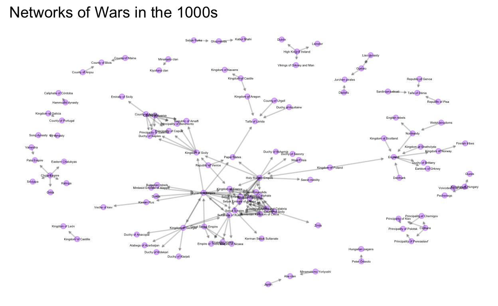
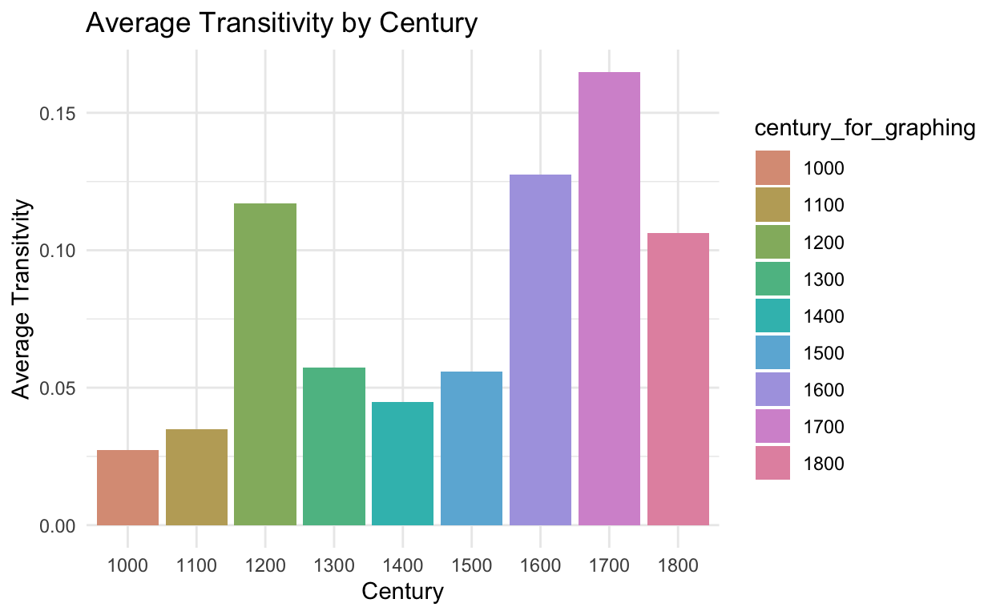
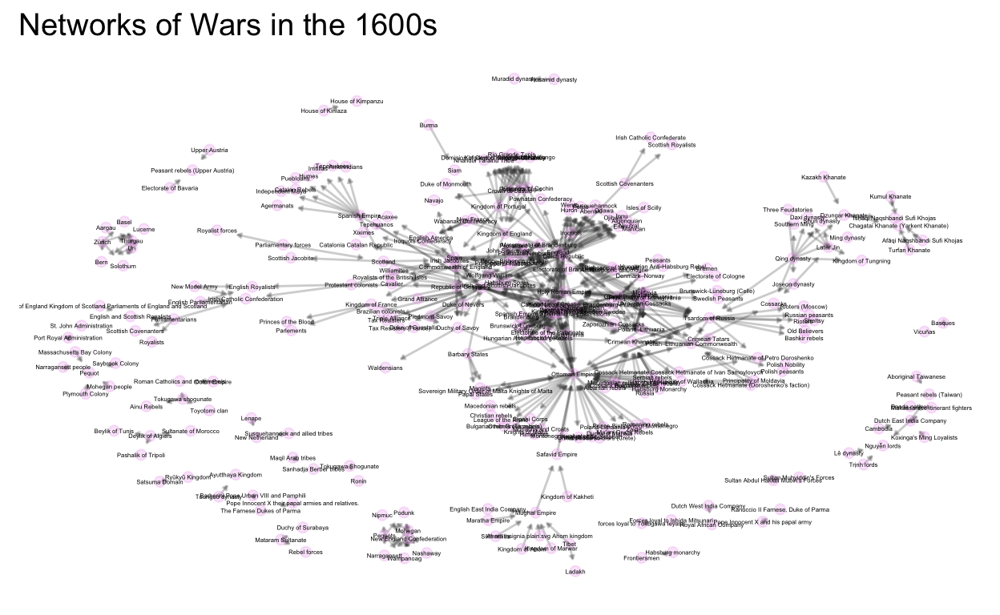
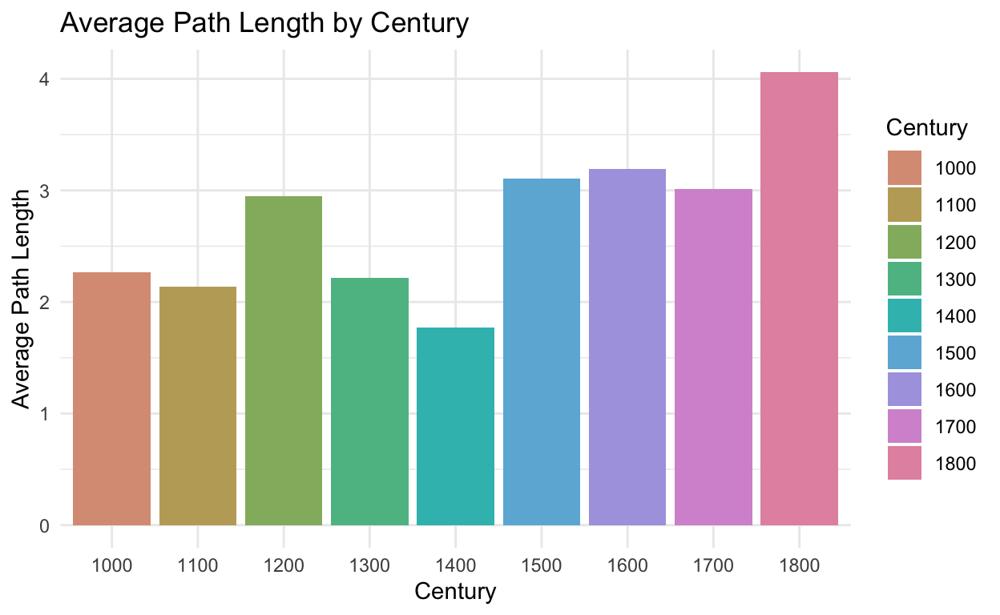
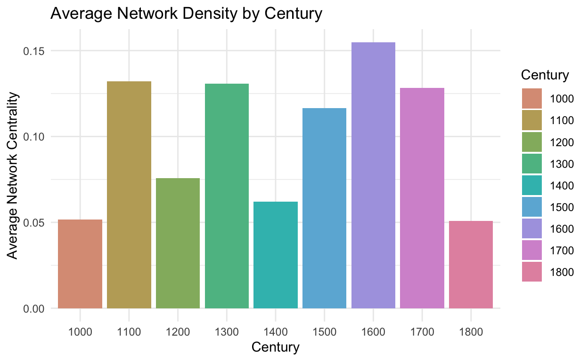
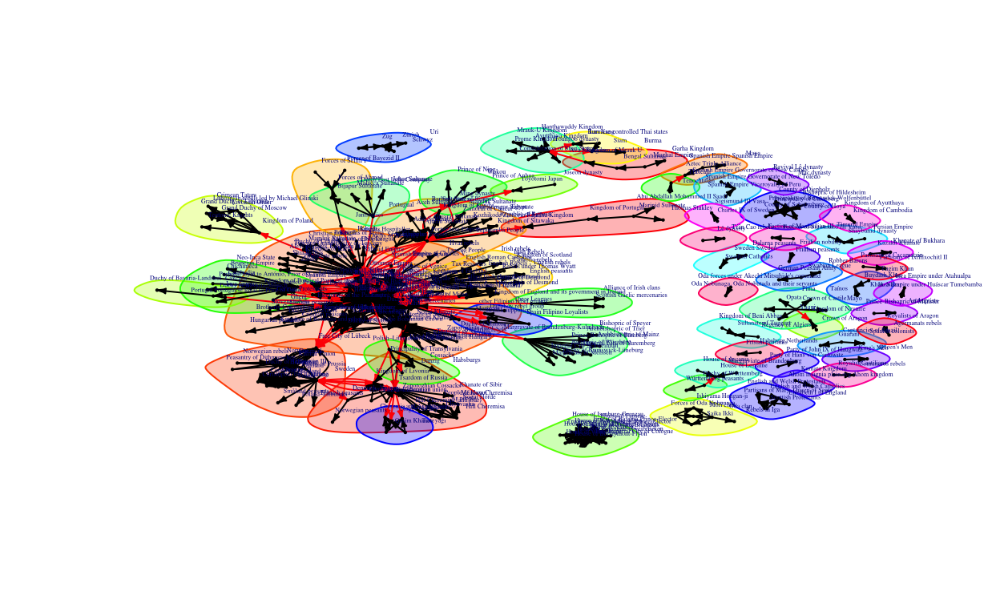
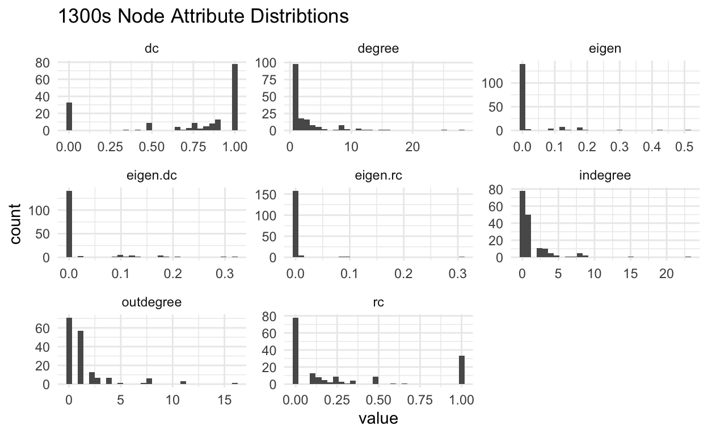
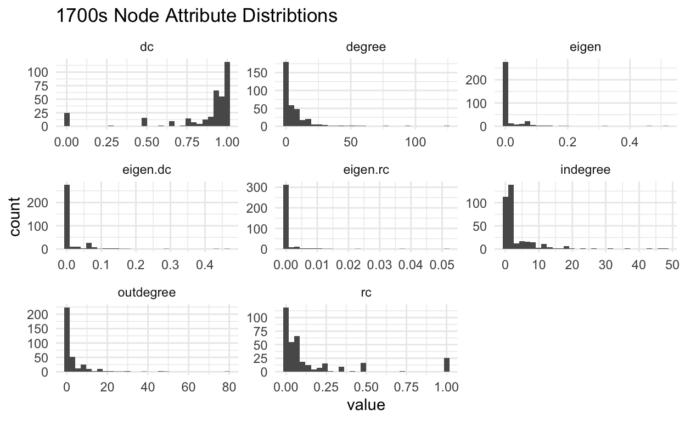
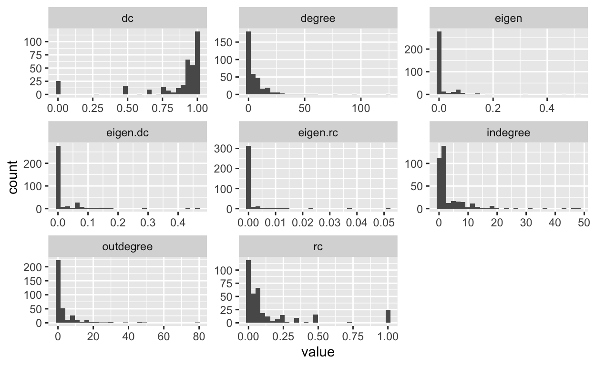
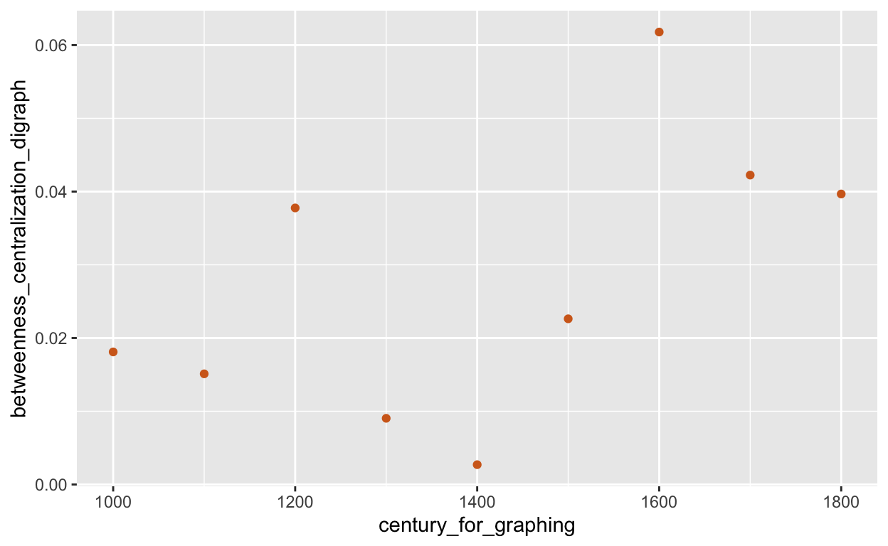

wars_in_1000s_edgelist <- as.matrix(wars_in_1000s)
wars_in_1000s_edgelist_network_edgelist <- graph.edgelist(wars_in_1000s_edgelist, directed=TRUE)
wars_in_1000s.ig<-graph_from_data_frame(wars_in_1000s)
wars_in_1000s_network <- asNetwork(wars_in_1000s.ig)
wars_1000s<-as.matrix(as_adjacency_matrix(wars_in_1000s.ig))
wars_in_1100s_edgelist <- as.matrix(wars_in_1100s)
wars_in_1100s_edgelist_network_edgelist <- graph.edgelist(wars_in_1100s_edgelist, directed=TRUE)
wars_in_1100s.ig<-graph_from_data_frame(wars_in_1100s)
wars_in_1100s_network <- asNetwork(wars_in_1100s.ig)
wars_1100s<-as.matrix(as_adjacency_matrix(wars_in_1100s.ig))
wars_in_1200s_edgelist <- as.matrix(wars_in_1200s)
wars_in_1200s_edgelist_network_edgelist <- graph.edgelist(wars_in_1200s_edgelist, directed=TRUE)
wars_in_1200s.ig<-graph_from_data_frame(wars_in_1200s)
wars_in_1200s_network <- asNetwork(wars_in_1200s.ig)
wars_1200s<-as.matrix(as_adjacency_matrix(wars_in_1200s.ig))
wars_in_1300s_edgelist <- as.matrix(wars_in_1300s)
wars_in_1300s_edgelist_network_edgelist <- graph.edgelist(wars_in_1300s_edgelist, directed=TRUE)
wars_in_1300s.ig<-graph_from_data_frame(wars_in_1300s)
wars_in_1300s_network <- asNetwork(wars_in_1300s.ig)
wars_1300s<-as.matrix(as_adjacency_matrix(wars_in_1300s.ig))
wars_in_1400s_edgelist <- as.matrix(wars_in_1400s)
wars_in_1400s_edgelist_network_edgelist <- graph.edgelist(wars_in_1400s_edgelist, directed=TRUE)
wars_in_1400s.ig<-graph_from_data_frame(wars_in_1400s)
wars_in_1400s_network <- asNetwork(wars_in_1400s.ig)
wars_1400s<-as.matrix(as_adjacency_matrix(wars_in_1400s.ig))
wars_in_1500s_edgelist <- as.matrix(wars_in_1500s)
wars_in_1500s_edgelist_network_edgelist <- graph.edgelist(wars_in_1500s_edgelist, directed=TRUE)
wars_in_1500s.ig<-graph_from_data_frame(wars_in_1500s)
wars_in_1500s_network <- asNetwork(wars_in_1500s.ig)
wars_1500s<-as.matrix(as_adjacency_matrix(wars_in_1500s.ig))
wars_in_1600s_edgelist <- as.matrix(wars_in_1600s)
wars_in_1600s_edgelist_network_edgelist <- graph.edgelist(wars_in_1600s_edgelist, directed=TRUE)
wars_in_1600s.ig<-graph_from_data_frame(wars_in_1600s)
wars_in_1600s_network <- asNetwork(wars_in_1600s.ig)
wars_1600s<-as.matrix(as_adjacency_matrix(wars_in_1600s.ig))
wars_in_1700s_edgelist <- as.matrix(wars_in_1700s)
wars_in_1700s_edgelist_network_edgelist <- graph.edgelist(wars_in_1700s_edgelist, directed=TRUE)
wars_in_1700s.ig<-graph_from_data_frame(wars_in_1700s)
wars_in_1700s_network <- asNetwork(wars_in_1700s.ig)
wars_1700s<-as.matrix(as_adjacency_matrix(wars_in_1700s.ig))
wars_in_1800s_edgelist <- as.matrix(wars_in_1800s)
wars_in_1800s_edgelist_network_edgelist <- graph.edgelist(wars_in_1800s_edgelist, directed=TRUE)
wars_in_1800s.ig<-graph_from_data_frame(wars_in_1800s)
wars_in_1800s_network <- asNetwork(wars_in_1800s.ig)
wars_1800s<-as.matrix(as_adjacency_matrix(wars_in_1800s.ig))
summary(wars_in_1000s_network)
Network attributes:
vertices = 111
directed = TRUE
hyper = FALSE
loops = FALSE
multiple = TRUE
bipartite = FALSE
total edges = 153
missing edges = 0
non-missing edges = 153
density = 0.01253071
Vertex attributes:
vertex.names:
character valued attribute
111 valid vertex names
No edge attributes
Network edgelist matrix:
[,1] [,2]
[1,] 1 58
[2,] 2 58
[3,] 3 58
[4,] 1 59
[5,] 2 59
[6,] 3 59
[7,] 1 60
[8,] 2 60
[9,] 3 60
[10,] 1 61
[11,] 2 61
[12,] 3 61
[13,] 1 62
[14,] 2 62
[15,] 3 62
[16,] 4 63
[17,] 5 24
[18,] 6 64
[19,] 4 63
[20,] 7 65
[21,] 8 66
[22,] 9 67
[23,] 9 68
[24,] 9 69
[25,] 10 33
[26,] 5 33
[27,] 11 70
[28,] 12 70
[29,] 13 70
[30,] 14 21
[31,] 15 71
[32,] 16 71
[33,] 17 24
[34,] 18 33
[35,] 19 33
[36,] 20 14
[37,] 21 14
[38,] 21 72
[39,] 21 73
[40,] 21 74
[41,] 22 14
[42,] 23 4
[43,] 24 75
[44,] 14 3
[45,] 25 3
[46,] 24 3
[47,] 14 45
[48,] 25 45
[49,] 24 45
[50,] 14 32
[51,] 25 32
[52,] 24 32
[53,] 14 41
[54,] 26 14
[55,] 26 76
[56,] 26 77
[57,] 26 78
[58,] 27 14
[59,] 27 76
[60,] 27 77
[61,] 27 78
[62,] 1 79
[63,] 28 80
[64,] 1 79
[65,] 28 80
[66,] 29 81
[67,] 30 81
[68,] 31 81
[69,] 32 81
[70,] 33 82
[71,] 33 82
[72,] 34 83
[73,] 34 29
[74,] 33 7
[75,] 33 84
[76,] 35 33
[77,] 36 35
[78,] 37 85
[79,] 38 85
[80,] 39 85
[81,] 40 37
[82,] 40 38
[83,] 40 39
[84,] 6 86
[85,] 6 87
[86,] 41 88
[87,] 42 89
[88,] 43 90
[89,] 14 91
[90,] 44 92
[91,] 24 93
[92,] 21 44
[93,] 21 94
[94,] 21 27
[95,] 35 95
[96,] 24 96
[97,] 45 97
[98,] 45 44
[99,] 45 27
[100,] 45 98
[101,] 45 99
[102,] 45 100
[103,] 45 101
[104,] 24 97
[105,] 24 44
[106,] 24 27
[107,] 24 98
[108,] 24 99
[109,] 24 100
[110,] 24 101
[111,] 28 97
[112,] 28 44
[113,] 28 27
[114,] 28 98
[115,] 28 99
[116,] 28 100
[117,] 28 101
[118,] 46 97
[119,] 46 44
[120,] 46 27
[121,] 46 98
[122,] 46 99
[123,] 46 100
[124,] 46 101
[125,] 14 97
[126,] 14 44
[127,] 14 27
[128,] 14 98
[129,] 14 99
[130,] 14 100
[131,] 14 101
[132,] 47 97
[133,] 47 44
[134,] 47 27
[135,] 47 98
[136,] 47 99
[137,] 47 100
[138,] 47 101
[139,] 48 102
[140,] 49 50
[141,] 50 49
[142,] 50 103
[143,] 51 103
[144,] 52 104
[145,] 52 105
[146,] 52 106
[147,] 52 107
[148,] 52 108
[149,] 53 109
[150,] 54 109
[151,] 55 110
[152,] 56 105
[153,] 57 111summary(wars_in_1100s_network)
Network attributes:
vertices = 97
directed = TRUE
hyper = FALSE
loops = FALSE
multiple = TRUE
bipartite = FALSE
total edges = 238
missing edges = 0
non-missing edges = 238
density = 0.02555842
Vertex attributes:
vertex.names:
character valued attribute
97 valid vertex names
No edge attributes
Network edgelist matrix:
[,1] [,2]
[1,] 1 37
[2,] 1 44
[3,] 1 45
[4,] 1 46
[5,] 1 47
[6,] 1 48
[7,] 1 38
[8,] 1 49
[9,] 1 50
[10,] 1 51
[11,] 1 52
[12,] 1 16
[13,] 1 12
[14,] 2 37
[15,] 2 44
[16,] 2 45
[17,] 2 46
[18,] 2 47
[19,] 2 48
[20,] 2 38
[21,] 2 49
[22,] 2 50
[23,] 2 51
[24,] 2 52
[25,] 2 16
[26,] 2 12
[27,] 3 37
[28,] 3 44
[29,] 3 45
[30,] 3 46
[31,] 3 47
[32,] 3 48
[33,] 3 38
[34,] 3 49
[35,] 3 50
[36,] 3 51
[37,] 3 52
[38,] 3 16
[39,] 3 12
[40,] 4 23
[41,] 5 4
[42,] 6 53
[43,] 6 54
[44,] 6 23
[45,] 4 53
[46,] 4 54
[47,] 4 23
[48,] 7 53
[49,] 7 54
[50,] 7 23
[51,] 8 55
[52,] 9 55
[53,] 10 55
[54,] 11 55
[55,] 12 55
[56,] 8 53
[57,] 9 53
[58,] 10 53
[59,] 11 53
[60,] 12 53
[61,] 7 23
[62,] 4 23
[63,] 13 23
[64,] 7 56
[65,] 4 56
[66,] 13 56
[67,] 14 57
[68,] 6 58
[69,] 15 59
[70,] 16 60
[71,] 16 61
[72,] 17 62
[73,] 18 63
[74,] 18 64
[75,] 19 65
[76,] 1 4
[77,] 1 37
[78,] 1 38
[79,] 1 66
[80,] 1 67
[81,] 1 68
[82,] 1 69
[83,] 1 16
[84,] 1 40
[85,] 1 32
[86,] 20 4
[87,] 20 37
[88,] 20 38
[89,] 20 66
[90,] 20 67
[91,] 20 68
[92,] 20 69
[93,] 20 16
[94,] 20 40
[95,] 20 32
[96,] 21 4
[97,] 21 37
[98,] 21 38
[99,] 21 66
[100,] 21 67
[101,] 21 68
[102,] 21 69
[103,] 21 16
[104,] 21 40
[105,] 21 32
[106,] 22 4
[107,] 22 37
[108,] 22 38
[109,] 22 66
[110,] 22 67
[111,] 22 68
[112,] 22 69
[113,] 22 16
[114,] 22 40
[115,] 22 32
[116,] 23 4
[117,] 23 37
[118,] 23 38
[119,] 23 66
[120,] 23 67
[121,] 23 68
[122,] 23 69
[123,] 23 16
[124,] 23 40
[125,] 23 32
[126,] 24 70
[127,] 25 70
[128,] 26 70
[129,] 27 70
[130,] 24 71
[131,] 25 71
[132,] 26 71
[133,] 27 71
[134,] 24 72
[135,] 25 72
[136,] 26 72
[137,] 27 72
[138,] 24 73
[139,] 25 73
[140,] 26 73
[141,] 27 73
[142,] 24 74
[143,] 25 74
[144,] 26 74
[145,] 27 74
[146,] 24 75
[147,] 25 75
[148,] 26 75
[149,] 27 75
[150,] 24 76
[151,] 25 76
[152,] 26 76
[153,] 27 76
[154,] 24 77
[155,] 25 77
[156,] 26 77
[157,] 27 77
[158,] 24 78
[159,] 25 78
[160,] 26 78
[161,] 28 79
[162,] 27 78
[163,] 29 80
[164,] 29 81
[165,] 29 82
[166,] 29 83
[167,] 29 84
[168,] 30 85
[169,] 30 86
[170,] 31 85
[171,] 31 86
[172,] 16 7
[173,] 32 87
[174,] 32 37
[175,] 32 88
[176,] 32 89
[177,] 32 90
[178,] 32 91
[179,] 33 92
[180,] 33 93
[181,] 4 34
[182,] 34 4
[183,] 34 39
[184,] 34 4
[185,] 35 94
[186,] 35 95
[187,] 4 34
[188,] 4 34
[189,] 36 16
[190,] 34 4
[191,] 34 4
[192,] 34 13
[193,] 34 96
[194,] 34 4
[195,] 4 34
[196,] 4 21
[197,] 4 16
[198,] 32 34
[199,] 32 21
[200,] 32 16
[201,] 37 34
[202,] 37 21
[203,] 37 16
[204,] 38 34
[205,] 38 21
[206,] 38 16
[207,] 39 34
[208,] 39 21
[209,] 39 16
[210,] 40 34
[211,] 40 21
[212,] 40 16
[213,] 32 97
[214,] 38 34
[215,] 26 76
[216,] 26 70
[217,] 26 74
[218,] 26 75
[219,] 26 73
[220,] 26 72
[221,] 41 76
[222,] 41 70
[223,] 41 74
[224,] 41 75
[225,] 41 73
[226,] 41 72
[227,] 42 76
[228,] 42 70
[229,] 42 74
[230,] 42 75
[231,] 42 73
[232,] 42 72
[233,] 43 76
[234,] 43 70
[235,] 43 74
[236,] 43 75
[237,] 43 73
[238,] 43 72summary(wars_in_1200s_network)
Network attributes:
vertices = 161
directed = TRUE
hyper = FALSE
loops = FALSE
multiple = TRUE
bipartite = FALSE
total edges = 313
missing edges = 0
non-missing edges = 313
density = 0.01215062
Vertex attributes:
vertex.names:
character valued attribute
161 valid vertex names
No edge attributes
Network edgelist matrix:
[,1] [,2]
[1,] 1 77
[2,] 2 77
[3,] 3 77
[4,] 4 77
[5,] 5 77
[6,] 1 50
[7,] 2 50
[8,] 3 50
[9,] 4 50
[10,] 5 50
[11,] 1 78
[12,] 2 78
[13,] 3 78
[14,] 4 78
[15,] 5 78
[16,] 6 64
[17,] 7 64
[18,] 8 64
[19,] 9 64
[20,] 10 14
[21,] 11 14
[22,] 12 14
[23,] 10 14
[24,] 13 79
[25,] 13 10
[26,] 13 80
[27,] 13 81
[28,] 13 82
[29,] 13 83
[30,] 13 84
[31,] 13 85
[32,] 14 79
[33,] 14 10
[34,] 14 80
[35,] 14 81
[36,] 14 82
[37,] 14 83
[38,] 14 84
[39,] 14 85
[40,] 15 79
[41,] 15 10
[42,] 15 80
[43,] 15 81
[44,] 15 82
[45,] 15 83
[46,] 15 84
[47,] 15 85
[48,] 16 18
[49,] 17 86
[50,] 17 87
[51,] 17 88
[52,] 17 89
[53,] 17 90
[54,] 17 91
[55,] 17 92
[56,] 17 93
[57,] 17 94
[58,] 17 64
[59,] 17 95
[60,] 17 34
[61,] 17 96
[62,] 17 97
[63,] 17 16
[64,] 17 98
[65,] 17 99
[66,] 17 100
[67,] 17 101
[68,] 17 102
[69,] 17 103
[70,] 17 104
[71,] 17 105
[72,] 17 106
[73,] 17 107
[74,] 18 108
[75,] 19 108
[76,] 10 109
[77,] 10 65
[78,] 14 110
[79,] 20 18
[80,] 20 26
[81,] 20 98
[82,] 20 6
[83,] 20 111
[84,] 20 2
[85,] 20 112
[86,] 20 78
[87,] 20 34
[88,] 20 113
[89,] 20 10
[90,] 20 24
[91,] 10 114
[92,] 10 115
[93,] 10 14
[94,] 10 116
[95,] 14 117
[96,] 14 10
[97,] 17 118
[98,] 21 119
[99,] 10 119
[100,] 6 119
[101,] 22 119
[102,] 23 119
[103,] 24 119
[104,] 21 120
[105,] 10 120
[106,] 6 120
[107,] 22 120
[108,] 23 120
[109,] 24 120
[110,] 6 20
[111,] 25 20
[112,] 6 26
[113,] 25 26
[114,] 26 6
[115,] 27 6
[116,] 28 6
[117,] 2 6
[118,] 24 6
[119,] 26 121
[120,] 27 121
[121,] 28 121
[122,] 2 121
[123,] 24 121
[124,] 26 51
[125,] 27 51
[126,] 28 51
[127,] 2 51
[128,] 24 51
[129,] 26 52
[130,] 27 52
[131,] 28 52
[132,] 2 52
[133,] 24 52
[134,] 26 122
[135,] 27 122
[136,] 28 122
[137,] 2 122
[138,] 24 122
[139,] 26 78
[140,] 27 78
[141,] 28 78
[142,] 2 78
[143,] 24 78
[144,] 26 25
[145,] 27 25
[146,] 28 25
[147,] 2 25
[148,] 24 25
[149,] 29 123
[150,] 29 124
[151,] 30 123
[152,] 30 124
[153,] 31 125
[154,] 32 126
[155,] 33 126
[156,] 34 127
[157,] 35 44
[158,] 36 44
[159,] 37 44
[160,] 38 44
[161,] 39 128
[162,] 40 128
[163,] 10 14
[164,] 41 129
[165,] 42 28
[166,] 42 45
[167,] 20 10
[168,] 20 2
[169,] 43 10
[170,] 43 2
[171,] 10 130
[172,] 44 35
[173,] 44 112
[174,] 45 7
[175,] 45 131
[176,] 45 132
[177,] 45 133
[178,] 45 134
[179,] 28 7
[180,] 28 131
[181,] 28 132
[182,] 28 133
[183,] 28 134
[184,] 46 28
[185,] 46 135
[186,] 46 136
[187,] 46 78
[188,] 47 28
[189,] 47 135
[190,] 47 136
[191,] 47 78
[192,] 2 28
[193,] 2 135
[194,] 2 136
[195,] 2 78
[196,] 42 137
[197,] 42 138
[198,] 48 139
[199,] 49 140
[200,] 50 140
[201,] 9 140
[202,] 51 140
[203,] 52 140
[204,] 17 140
[205,] 2 140
[206,] 49 20
[207,] 50 20
[208,] 9 20
[209,] 51 20
[210,] 52 20
[211,] 17 20
[212,] 2 20
[213,] 49 17
[214,] 50 17
[215,] 9 17
[216,] 51 17
[217,] 52 17
[218,] 2 17
[219,] 49 141
[220,] 50 141
[221,] 9 141
[222,] 51 141
[223,] 52 141
[224,] 17 141
[225,] 2 141
[226,] 49 104
[227,] 50 104
[228,] 9 104
[229,] 51 104
[230,] 52 104
[231,] 17 104
[232,] 2 104
[233,] 17 49
[234,] 53 74
[235,] 54 142
[236,] 55 143
[237,] 56 144
[238,] 34 97
[239,] 57 145
[240,] 17 145
[241,] 57 49
[242,] 17 49
[243,] 58 44
[244,] 59 44
[245,] 60 44
[246,] 58 35
[247,] 59 35
[248,] 60 35
[249,] 61 10
[250,] 61 146
[251,] 61 147
[252,] 43 148
[253,] 43 26
[254,] 43 51
[255,] 43 14
[256,] 43 49
[257,] 53 149
[258,] 62 150
[259,] 63 151
[260,] 64 151
[261,] 17 151
[262,] 14 152
[263,] 28 17
[264,] 65 153
[265,] 65 10
[266,] 65 154
[267,] 66 153
[268,] 66 10
[269,] 66 154
[270,] 67 155
[271,] 68 155
[272,] 69 155
[273,] 70 155
[274,] 71 155
[275,] 72 155
[276,] 73 155
[277,] 67 156
[278,] 68 156
[279,] 69 156
[280,] 70 156
[281,] 71 156
[282,] 72 156
[283,] 73 156
[284,] 67 157
[285,] 68 157
[286,] 69 157
[287,] 70 157
[288,] 71 157
[289,] 72 157
[290,] 73 157
[291,] 67 158
[292,] 68 158
[293,] 69 158
[294,] 70 158
[295,] 71 158
[296,] 72 158
[297,] 73 158
[298,] 67 159
[299,] 68 159
[300,] 69 159
[301,] 70 159
[302,] 71 159
[303,] 72 159
[304,] 73 159
[305,] 74 62
[306,] 75 62
[307,] 76 160
[308,] 10 14
[309,] 7 28
[310,] 7 64
[311,] 7 64
[312,] 53 14
[313,] 10 161set.seed(777)
ggplot(wars_in_1000s_network, aes(x = x, y = y, xend = xend, yend = yend)) +
geom_edges(color = "grey25", alpha = 0.25, arrow = arrow(length = unit(2, "pt"), type = "closed"))+
geom_nodes(color = "purple1", alpha = 0.3, size = 2) +
geom_nodetext(aes( label = vertex.names ), size=1)+
ggtitle("Networks of Wars in the 1000s") +
theme_blank()

set.seed(777)
ggplot(wars_in_1100s_network, aes(x = x, y = y, xend = xend, yend = yend)) +
geom_edges(color = "grey25", alpha = 0.25, arrow = arrow(length = unit(2, "pt"), type = "closed"))+
geom_nodes(color = "gold", alpha = 0.3, size = 2) +
geom_nodetext(aes( label = vertex.names ), size=1)+
ggtitle("Networks of Wars in the 1100s") +
theme_blank()
set.seed(777)
ggplot(wars_in_1200s_network, aes(x = x, y = y, xend = xend, yend = yend)) +
geom_edges(color = "grey25", alpha = 0.25, arrow = arrow(length = unit(2, "pt"), type = "closed"))+
geom_nodes(color = "forestgreen", alpha = 0.3, size = 2) +
geom_nodetext(aes( label = vertex.names ), size=1)+
ggtitle("Networks of Wars in the 1200s") +
theme_blank()
set.seed(777)
ggplot(wars_in_1300s_network, aes(x = x, y = y, xend = xend, yend = yend)) +
geom_edges(color = "grey25", alpha = 0.25, arrow = arrow(length = unit(2, "pt"), type = "closed"))+
geom_nodes(color = "burlywood1", alpha = 0.3, size = 2) +
geom_nodetext(aes( label = vertex.names ), size=1)+
ggtitle("Networks of Wars in the 1300s") +
theme_blank()
set.seed(777)
ggplot(wars_in_1400s_network, aes(x = x, y = y, xend = xend, yend = yend)) +
geom_edges(color = "grey25", alpha = 0.25, arrow = arrow(length = unit(2, "pt"), type = "closed"))+
geom_nodes(color = "aquamarine2", alpha = 0.3, size = 2) +
geom_nodetext(aes( label = vertex.names ), size=1)+
ggtitle("Networks of Wars in the 1400s") +
theme_blank()
set.seed(777)
ggplot(wars_in_1500s_network, aes(x = x, y = y, xend = xend, yend = yend)) +
geom_edges(color = "grey25", alpha = 0.25, arrow = arrow(length = unit(2, "pt"), type = "closed"))+
geom_nodes(color = "mediumorchid1", alpha = 0.3, size = 2) +
geom_nodetext(aes( label = vertex.names ), size=1)+
ggtitle("Networks of Wars in the 1500s") +
theme_blank()

set.seed(777)
ggplot(wars_in_1600s_network, aes(x = x, y = y, xend = xend, yend = yend)) +
geom_edges(color = "grey25", alpha = 0.25, arrow = arrow(length = unit(2, "pt"), type = "closed"))+
geom_nodes(color = "plum2", alpha = 0.3, size = 2) +
geom_nodetext(aes( label = vertex.names ), size=1)+
ggtitle("Networks of Wars in the 1600s") +
theme_blank()

set.seed(777)
ggplot(wars_in_1700s_network, aes(x = x, y = y, xend = xend, yend = yend)) +
geom_edges(color = "grey25", alpha = 0.25, arrow = arrow(length = unit(2, "pt"), type = "closed"))+
geom_nodes(color = "tomato1", alpha = 0.3, size = 2) +
geom_nodetext(aes( label = vertex.names ), size=1)+
ggtitle("Networks of Wars in the 1700s") +
theme_blank()

set.seed(777)
ggplot(wars_in_1800s_network, aes(x = x, y = y, xend = xend, yend = yend)) +
geom_edges(color = "grey25", alpha = 0.25, arrow = arrow(length = unit(2, "pt"), type = "closed"))+
geom_nodes(color = "steelblue1", alpha = 0.3, size = 2) +
geom_nodetext(aes( label = vertex.names ), size=1)+
ggtitle("Networks of Wars in the 1800s") +
theme_blank()
set.seed(238)
#Run clustering algorithm: fast_greedy
wars_in_1000s.wt<-walktrap.community(wars_in_1000s.ig)
#igraph::groups(wars_in_1000s.wt)
Adding more steps resulted in 19 groups for both 10 and 20 steps.
#Run & inspect clustering algorithm: 10 steps
#igraph::groups(walktrap.community(wars_in_1000s.ig, steps=10))
#Run & inspect clustering algorithm: 20 steps
#igraph::groups(walktrap.community(wars_in_1000s.ig ,steps=20))
#Run & inspect clustering algorithm

set.seed(238)
#Run clustering algorithm: fast_greedy
wars_in_1100s.wt<-walktrap.community(wars_in_1100s.ig)
#igraph::groups(wars_in_1000s.wt)

set.seed(238)
#Run clustering algorithm: fast_greedy
wars_in_1200s.wt<-walktrap.community(wars_in_1200s.ig)
#igraph::groups(wars_in_1000s.wt)

set.seed(238)
#Run clustering algorithm: fast_greedy
wars_in_1300s.wt<-walktrap.community(wars_in_1300s.ig)
#igraph::groups(wars_in_1000s.wt)
set.seed(238)
#Run clustering algorithm: fast_greedy
wars_in_1400s.wt<-walktrap.community(wars_in_1400s.ig)
#igraph::groups(wars_in_1000s.wt)

set.seed(238)
#Run clustering algorithm: fast_greedy
wars_in_1500s.wt<-walktrap.community(wars_in_1500s.ig)
#igraph::groups(wars_in_1000s.wt)

set.seed(238)
#Run clustering algorithm: fast_greedy
wars_in_1600s.wt<-walktrap.community(wars_in_1600s.ig)
#igraph::groups(wars_in_1000s.wt)
set.seed(238)
#Run clustering algorithm: fast_greedy
wars_in_1700s.wt<-walktrap.community(wars_in_1700s.ig)
#igraph::groups(wars_in_1000s.wt)
set.seed(238)
#Run clustering algorithm: fast_greedy
wars_in_1800s.wt<-walktrap.community(wars_in_1800s.ig)
#igraph::groups(wars_in_1000s.wt)
#pdf("h_clust_plot.pdf")
dd <- dist(scale(wars_1000s), method = "euclidean")
hc <- hclust(dd, method = "complete")
dend <- hc %>% as.dendrogram() %>%
set("branches_k_color", k=39) %>%
set("branches_lwd", 1) %>%
set("labels_cex", c(.3,0.3))
# plot the dend in usual "base" plotting engine:
plot(dend,col="white", type="rectangle", frame.plot = FALSE, center =FALSE, xlab="Belligerents", ylab="Distance (Euclidean)", main="Complete, Euclidean Distance Dendrogram" , cex=0.5, horiz = FALSE)

#pdf("h_clust_plot.pdf")
dd <- dist(scale(wars_1100s), method = "euclidean")
hc <- hclust(dd, method = "complete")
dend <- hc %>% as.dendrogram() %>%
set("branches_k_color", k=39) %>%
set("branches_lwd", 1) %>%
set("labels_cex", c(.2,0.2))
# plot the dend in usual "base" plotting engine:
plot(dend,col="white", type="rectangle", frame.plot = FALSE, center =FALSE, xlab="Belligerents", ylab="Distance (Euclidean)", main="Complete, Euclidean Distance Dendrogram" , cex=0.5, horiz = FALSE)
#pdf("h_clust_plot.pdf")
dd <- dist(scale(wars_1200s), method = "euclidean")
hc <- hclust(dd, method = "complete")
dend <- hc %>% as.dendrogram() %>%
set("branches_k_color", k=39) %>%
set("branches_lwd", 1) %>%
set("labels_cex", c(.2,0.2))
# plot the dend in usual "base" plotting engine:
plot(dend,col="white", type="rectangle", frame.plot = FALSE, center =FALSE, xlab="Belligerents", ylab="Distance (Euclidean)", main="Complete, Euclidean Distance Dendrogram" , cex=0.5, horiz = FALSE)
#pdf("h_clust_plot.pdf")
dd <- dist(scale(wars_1300s), method = "euclidean")
hc <- hclust(dd, method = "complete")
dend <- hc %>% as.dendrogram() %>%
set("branches_k_color", k=39) %>%
set("branches_lwd", 1) %>%
set("labels_cex", c(.2,0.2))
# plot the dend in usual "base" plotting engine:
plot(dend,col="white", type="rectangle", frame.plot = FALSE, center =FALSE, xlab="Belligerents", ylab="Distance (Euclidean)", main="Complete, Euclidean Distance Dendrogram" , cex=0.5, horiz = FALSE)
#pdf("h_clust_plot.pdf")
dd <- dist(scale(wars_1400s), method = "euclidean")
hc <- hclust(dd, method = "complete")
dend <- hc %>% as.dendrogram() %>%
set("branches_k_color", k=39) %>%
set("branches_lwd", 1) %>%
set("labels_cex", c(.15,0.15))
# plot the dend in usual "base" plotting engine:
plot(dend,col="white", type="rectangle", frame.plot = FALSE, center =FALSE, xlab="Belligerents", ylab="Distance (Euclidean)", main="Complete, Euclidean Distance Dendrogram" , cex=0.5, horiz = FALSE)

#pdf("h_clust_plot.pdf")
dd <- dist(scale(wars_1500s), method = "euclidean")
hc <- hclust(dd, method = "complete")
dend <- hc %>% as.dendrogram() %>%
set("branches_k_color", k=39) %>%
set("branches_lwd", 1) %>%
set("labels_cex", c(.15,0.15))
# plot the dend in usual "base" plotting engine:
plot(dend,col="white", type="rectangle", frame.plot = FALSE, center =FALSE, xlab="Belligerents", ylab="Distance (Euclidean)", main="Complete, Euclidean Distance Dendrogram" , cex=0.5, horiz = FALSE)
#pdf("h_clust_plot.pdf")
dd <- dist(scale(wars_1600s), method = "euclidean")
hc <- hclust(dd, method = "complete")
dend <- hc %>% as.dendrogram() %>%
set("branches_k_color", k=39) %>%
set("branches_lwd", 1) %>%
set("labels_cex", c(.15,0.15))
# plot the dend in usual "base" plotting engine:
plot(dend,col="white", type="rectangle", frame.plot = FALSE, center =FALSE, xlab="Belligerents", ylab="Distance (Euclidean)", main="Complete, Euclidean Distance Dendrogram" , cex=0.5, horiz = FALSE)
#pdf("h_clust_plot.pdf")
dd <- dist(scale(wars_1700s), method = "euclidean")
hc <- hclust(dd, method = "complete")
dend <- hc %>% as.dendrogram() %>%
set("branches_k_color", k=39) %>%
set("branches_lwd", 1) %>%
set("labels_cex", c(.15,0.15))
# plot the dend in usual "base" plotting engine:
plot(dend,col="white", type="rectangle", frame.plot = FALSE, center =FALSE, xlab="Belligerents", ylab="Distance (Euclidean)", main="Complete, Euclidean Distance Dendrogram" , cex=0.5, horiz = FALSE)
#pdf("h_clust_plot.pdf")
set.seed(883)
dd <- dist(scale(wars_1800s), method = "euclidean")
hc <- hclust(dd, method = "complete")
dend <- hc %>% as.dendrogram() %>%
set("branches_k_color", k=39) %>%
set("branches_lwd", 1) %>%
set("labels_cex", c(.1,0.1))
# plot the dend in usual "base" plotting engine:
plot(dend,col="white", type="rectangle", frame.plot = FALSE, center =FALSE, xlab="Belligerents", ylab="Distance (Euclidean)", main="Complete, Euclidean Distance Dendrogram" , cex=0.5, horiz = FALSE)

Trade Data
#pdf("1800_map.pdf")
set.seed(15887)
aspects_of_1800s_states_for_map <- read_excel("~/Desktop/Spring 2022/Networks/aspects_of_1800s_states_for_map.xlsx")
aspects_of_1800s_states_for_map <- aspects_of_1800s_states_for_map[,c(1:3)]
cl <- colors(distinct = TRUE)
# to set random generator seed
mycols2 <- sample(cl, 502)
mycols3 <- sample(cl, 145)
mycols2<-c(mycols2, mycols3)
palette(mycols2)
map('world', fill = TRUE, col = "white", mar = rep(0, 4), resolution = 10 , myborder = 0.001, bg="skyblue1")
nodes <- transform(aspects_of_1800s_states_for_map, countries = as.factor(aspects_of_1800s_states_for_map$name))
with(nodes, points(long, Lat, col=countries, pch=19, cex=0.5))
edges <- subset(data.frame(from = wars_in_1800s$In, to = wars_in_1800s$Out, stringsAsFactors = F), from != to)
edges <- merge(merge(edges, nodes[, c("name", "long", "Lat")], by.x = "from", by.y = "name"), nodes[, c("name", "long", "Lat")], by.x = "to", by.y = "name")
edges$col <- as.integer(nodes$countries[match(edges$from, nodes$name)])
edges$long.x<-as.integer(edges$long.x)
edges$Lat.x<-as.integer(edges$Lat.x)
edges$long.y<-as.integer(edges$long.y)
edges$Lat.y<-as.integer(edges$Lat.y)
apply(edges[,-(1:2)], 1, function(x)
curvedarrow(to=x[3:4], from=x[1:2], lcol=x[5],
curve=.1, arr.pos = 1, lwd=.2, arr.lwd=0.01,
arr.width=0.1, arr.length=0.1))

[[1]]
ex ey
94.969571 4.943287
[[2]]
ex ey
12.003760 8.999312
[[3]]
ex ey
11.98649 9.00042
[[4]]
ex ey
60.00033 59.98114
[[5]]
ex ey
68.98864 33.95681
[[6]]
[1] -9.869572e-06 5.999372e+00
[[7]]
[1] -9.869572e-06 5.999372e+00
[[8]]
ex ey
54.98312 24.96570
[[9]]
ex ey
-83.99937 9.99999
[[10]]
[1] 21.00002 41.00220
[[11]]
ex ey
102.00063 16.87995
[[12]]
ex ey
165.96581761 -0.09561888
[[13]]
NULL
[[14]]
ex ey
-110.99432 37.00373
[[15]]
ex ey
-111.00023 37.01068
[[16]]
ex ey
-96.99649 49.00626
[[17]]
ex ey
-96.99826 48.99055
[[18]]
ex ey
-96.99649 49.00626
[[19]]
ex ey
-69.00217 -40.99653
[[20]]
ex ey
42.99797 37.99060
[[21]]
ex ey
42.99797 37.99060
[[22]]
ex ey
-1.014135 6.000425
[[23]]
ex ey
-1.014135 6.000425
[[24]]
[1] -0.9999975 6.0003142
[[25]]
ex ey
-1.000628 6.000010
[[26]]
[1] -0.9999975 6.0003142
[[27]]
ex ey
150.94573 -33.09405
[[28]]
ex ey
150.94573 -33.09405
[[29]]
ex ey
150.94573 -33.09405
[[30]]
[1] 15.99995 47.99686
[[31]]
ex ey
15.99805 47.99563
[[32]]
[1] 15.99995 47.99686
[[33]]
ex ey
15.99737 47.99250
[[34]]
[1] 15.99995 47.99686
[[35]]
ex ey
15.99744 47.99690
[[36]]
ex ey
15.99680 47.99628
[[37]]
[1] 15.99986 47.99120
[[38]]
ex ey
15.99678 47.99502
[[39]]
ex ey
16.00309 47.99681
[[40]]
ex ey
16.01709 47.92746
[[41]]
ex ey
15.99805 47.99563
[[42]]
ex ey
16.00182 47.99557
[[43]]
[1] 15.99993 47.99560
[[44]]
ex ey
15.99746 47.99815
[[45]]
ex ey
15.99681 47.99691
[[46]]
ex ey
15.99870 47.99751
[[47]]
ex ey
15.99737 47.99250
[[48]]
ex ey
15.99658 48.00443
[[49]]
ex ey
16.00182 47.99557
[[50]]
ex ey
16.00182 47.99557
[[51]]
ex ey
15.99746 47.99815
[[52]]
ex ey
15.99876 48.00158
[[53]]
ex ey
15.99971 48.00252
[[54]]
[1] 16.00000 48.00031
[[55]]
ex ey
15.99678 47.99502
[[56]]
[1] 15.99986 47.99120
[[57]]
ex ey
15.99809 47.99814
[[58]]
ex ey
15.99804 47.99500
[[59]]
ex ey
15.99806 47.99626
[[60]]
ex ey
16.00559 47.99551
[[61]]
ex ey
15.99872 47.99876
[[62]]
ex ey
16.00055 47.99496
[[63]]
ex ey
15.99743 47.99627
[[64]]
ex ey
15.99680 47.99628
[[65]]
ex ey
15.99749 48.00004
[[66]]
[1] 15.99993 47.99560
[[67]]
ex ey
16.00185 47.99746
[[68]]
[1] 15.99986 47.99120
[[69]]
ex ey
16.00033 48.00157
[[70]]
ex ey
15.99866 47.99499
[[71]]
ex ey
16.00501 47.99866
[[72]]
ex ey
15.99868 47.99625
[[73]]
ex ey
16.00484 47.98798
[[74]]
[1] 15.99986 47.99120
[[75]]
ex ey
16.00189 48.00061
[[76]]
ex ey
45.98916 41.99011
[[77]]
ex ey
-0.005021605 32.000667796
[[78]]
ex ey
-0.005021605 32.000667796
[[79]]
ex ey
7.996913 49.006936
[[80]]
ex ey
28.00126 -23.00002
[[81]]
ex ey
-57.00185 -27.99559
[[82]]
ex ey
-115.99833 43.01224
[[83]]
ex ey
-115.99833 43.01224
[[84]]
ex ey
20.00032 32.00063
[[85]]
ex ey
-59.01179 13.01863
[[86]]
ex ey
4.000589 51.997477
[[87]]
ex ey
10.99810 47.99877
[[88]]
ex ey
10.99686 48.00005
[[89]]
ex ey
10.99937 48.00032
[[90]]
ex ey
10.99811 47.99940
[[91]]
ex ey
10.99683 47.99816
[[92]]
ex ey
10.99749 48.00004
[[93]]
ex ey
10.99659 48.00600
[[94]]
ex ey
10.99685 47.99942
[[95]]
ex ey
10.99875 48.00064
[[96]]
ex ey
10.99683 47.99816
[[97]]
ex ey
10.99748 47.99941
[[98]]
ex ey
10.99873 47.99939
[[99]]
ex ey
10.99809 47.99814
[[100]]
ex ey
10.99685 47.99942
[[101]]
[1] -101.00000 19.00063
[[102]]
ex ey
87.98154 22.94498
[[103]]
ex ey
87.98154 22.94498
[[104]]
ex ey
5.997546 51.007560
[[105]]
ex ey
9.999715 36.003772
[[106]]
ex ey
9.992824 36.006340
[[107]]
ex ey
9.990477 35.993865
[[108]]
ex ey
9.99908 36.00283
[[109]]
ex ey
9.992381 35.995092
[[110]]
ex ey
88.98404 26.94432
[[111]]
ex ey
10.00409 53.00122
[[112]]
ex ey
10.00375 52.99868
[[113]]
ex ey
10.00502 52.99929
[[114]]
ex ey
10.00157 53.00030
[[115]]
ex ey
10.00125 52.99935
[[116]]
ex ey
10.00187 52.99871
[[117]]
ex ey
10.00306 52.99492
[[118]]
ex ey
10.00057 52.99622
[[119]]
ex ey
10.00313 52.99932
[[120]]
ex ey
10.00034 53.00345
[[121]]
ex ey
10.00064 53.00094
[[122]]
ex ey
105.98201 20.93492
[[123]]
ex ey
106.0016 21.0003
[[124]]
NULL
[[125]]
ex ey
-56.02657 -33.98220
[[126]]
NULL
[[127]]
ex ey
-56.00125 -33.99905
[[128]]
ex ey
-56.00192 -34.00248
[[129]]
ex ey
-56.00192 -34.00248
[[130]]
ex ey
-56.00442 -34.00119
[[131]]
ex ey
-56.00374 -33.99589
[[132]]
ex ey
-56.00374 -33.99589
[[133]]
[1] -56.00002 -34.00126
[[134]]
ex ey
-56.02562 -33.98158
[[135]]
ex ey
-56.02340 -33.97939
[[136]]
ex ey
-77.995580 -5.997207
[[137]]
ex ey
-77.996834 -5.996883
[[138]]
ex ey
-67.98934 -16.00142
[[139]]
ex ey
-68.00220 -15.99967
[[140]]
ex ey
-67.99805 -15.99216
[[141]]
[1] 12.00000 13.00063
[[142]]
ex ey
17.99684 42.99879
[[143]]
ex ey
-46.00031 -22.99906
[[144]]
ex ey
0.006465763 51.023198399
[[145]]
ex ey
0.005510949 51.021635008
[[146]]
ex ey
0.02763596 50.99893742
[[147]]
ex ey
0.006673823 51.009687106
[[148]]
ex ey
0.02827415 50.99955587
[[149]]
ex ey
0.005510949 51.021635008
[[150]]
ex ey
0.02827415 50.99955587
[[151]]
ex ey
0.02394515 51.00860892
[[152]]
ex ey
0.007700191 51.020361101
[[153]]
ex ey
0.006465763 51.023198399
[[154]]
ex ey
0.02744451 51.05413727
[[155]]
ex ey
0.02826428 50.99892755
[[156]]
ex ey
174.00063 -35.99969
[[157]]
ex ey
174.00032 -35.99969
[[158]]
ex ey
174.00094 -35.99969
[[159]]
ex ey
95.98020 20.93998
[[160]]
NULL
[[161]]
ex ey
-38.991871 -9.002642
[[162]]
ex ey
12.00063 42.00062
[[163]]
ex ey
-1.998125 42.999342
[[164]]
ex ey
-2.001561 43.001269
[[165]]
ex ey
-2.002508 43.000648
[[166]]
ex ey
-1.998125 42.999342
[[167]]
ex ey
-1.998125 42.999342
[[168]]
ex ey
-1.996928 42.995552
[[169]]
[1] -83.000010 8.999372
[[170]]
ex ey
45.98916 41.99011
[[171]]
ex ey
-95.99713 47.00595
[[172]]
ex ey
-95.99713 47.00595
[[173]]
ex ey
-95.99713 47.00595
[[174]]
ex ey
-95.99713 47.00595
[[175]]
ex ey
-95.99713 47.00595
[[176]]
ex ey
-95.99953 46.98994
[[177]]
ex ey
-95.99713 47.00595
[[178]]
ex ey
-95.99681 47.00594
[[179]]
ex ey
-70.00534 -32.99933
[[180]]
ex ey
-70.00817 -32.99987
[[181]]
ex ey
-70.00408 -32.99965
[[182]]
[1] -70.00001 -33.00063
[[183]]
ex ey
109.003750147 -0.001315846
[[184]]
ex ey
-96.99901 41.00628
[[185]]
ex ey
-97.00026 37.00629
[[186]]
ex ey
-96.99869 41.00627
[[187]]
[1] -96.99995 37.00628
[[188]]
ex ey
130.99543 33.86935
[[189]]
ex ey
130.99970 34.00126
[[190]]
ex ey
130.99971 34.00252
[[191]]
ex ey
130.98744 33.92038
[[192]]
ex ey
131.00188 33.99934
[[193]]
ex ey
130.98803 33.91786
[[194]]
ex ey
35.99366 48.99633
[[195]]
ex ey
36.99051 43.99575
[[196]]
NULL
[[197]]
NULL
[[198]]
NULL
[[199]]
NULL
[[200]]
ex ey
-56.00068 -34.00313
[[201]]
NULL
[[202]]
ex ey
-98.00165 34.02986
[[203]]
ex ey
-98.00120 34.00661
[[204]]
ex ey
-98.00089 34.00660
[[205]]
ex ey
-98.00120 34.00661
[[206]]
ex ey
-98.00120 34.00661
[[207]]
ex ey
-98.00120 34.00661
[[208]]
ex ey
-97.99686 33.99995
[[209]]
ex ey
-97.99059 33.99922
[[210]]
ex ey
-33.991292 -8.005793
[[211]]
ex ey
8.000636 50.000938
[[212]]
ex ey
8.000648 50.002508
[[213]]
ex ey
7.997227 50.006934
[[214]]
ex ey
8.002207 50.000925
[[215]]
ex ey
8.003458 50.000287
[[216]]
ex ey
8.007194 49.977891
[[217]]
ex ey
8.001885 49.999970
[[218]]
ex ey
8.001197 49.996210
[[219]]
ex ey
8.006175 49.992990
[[220]]
ex ey
7.999374 50.000319
[[221]]
ex ey
8.000628 49.999990
[[222]]
ex ey
8.002877 50.006261
[[223]]
ex ey
8.000631 50.000309
[[224]]
ex ey
7.999293 49.994983
[[225]]
ex ey
7.999698 50.001573
[[226]]
ex ey
8.003782 50.001541
[[227]]
ex ey
8.000636 50.000938
[[228]]
ex ey
7.999698 50.001573
[[229]]
ex ey
8.000631 50.000309
[[230]]
ex ey
7.999384 50.001576
[[231]]
ex ey
8.003458 50.000287
[[232]]
ex ey
8.002837 50.001234
[[233]]
ex ey
7.998704 49.997506
[[234]]
NULL
[[235]]
ex ey
8.000945 50.000307
[[236]]
ex ey
8.006175 49.992990
[[237]]
ex ey
8.00097 50.00345
[[238]]
ex ey
8.002538 50.003122
[[239]]
ex ey
7.997227 50.006934
[[240]]
ex ey
7.999377 50.000633
[[241]]
ex ey
8.003782 50.001541
[[242]]
ex ey
8.004818 50.013472
[[243]]
ex ey
7.999293 49.994983
[[244]]
ex ey
8.007372 49.989200
[[245]]
ex ey
-67.00064 -17.00062
[[246]]
ex ey
150.9993 -33.0025
[[247]]
ex ey
-83.992107 9.004965
[[248]]
ex ey
-84.021412 8.997194
[[249]]
ex ey
-84.009093 9.002271
[[250]]
ex ey
9.000628 51.999990
[[251]]
[1] 9.000002 52.000314
[[252]]
ex ey
8.999688 52.000317
[[253]]
[1] 9.000005 52.000628
[[254]]
ex ey
8.999362 51.999382
[[255]]
ex ey
8.999362 51.999382
[[256]]
ex ey
9.000618 51.999362
[[257]]
ex ey
8.999688 52.000317
[[258]]
[1] 9.00001 52.00126
[[259]]
ex ey
9.000317 52.000312
[[260]]
ex ey
9.000636 52.000938
[[261]]
ex ey
8.999691 52.000631
[[262]]
ex ey
9.000631 52.000309
[[263]]
ex ey
-112.99739 53.01192
[[264]]
ex ey
-82.00515 23.02486
[[265]]
ex ey
-82.00515 23.02486
[[266]]
NULL
[[267]]
ex ey
-99.99743 46.00721
[[268]]
ex ey
-58.013994 6.018332
[[269]]
ex ey
12.00094 55.00031
[[270]]
ex ey
12.00310 54.99744
[[271]]
ex ey
12.00094 55.00031
[[272]]
ex ey
12.00221 55.00124
[[273]]
ex ey
12.00239 54.99242
[[274]]
ex ey
12.00126 55.00030
[[275]]
ex ey
12.01002 54.99796
[[276]]
ex ey
12.00534 55.00027
[[277]]
ex ey
12.00437 54.99805
[[278]]
ex ey
12.01030 54.97533
[[279]]
ex ey
12.00221 55.00124
[[280]]
ex ey
11.99879 55.00566
[[281]]
ex ey
12.00928 54.99043
[[282]]
ex ey
11.99747 54.99878
[[283]]
ex ey
12.00439 54.99930
[[284]]
ex ey
11.99747 54.99878
[[285]]
ex ey
12.00094 55.00031
[[286]]
ex ey
12.00239 54.99242
[[287]]
ex ey
9.999352 49.998753
[[288]]
ex ey
9.999374 50.000319
[[289]]
ex ey
9.998743 50.000020
[[290]]
NULL
[[291]]
ex ey
9.998115 50.000030
[[292]]
ex ey
9.998095 49.998773
[[293]]
[1] 10.00000 50.00063
[[294]]
ex ey
9.999362 49.999382
[[295]]
ex ey
9.99906 50.00032
[[296]]
ex ey
9.998115 50.000030
[[297]]
ex ey
9.999372 50.000010
[[298]]
ex ey
9.998095 49.998773
[[299]]
ex ey
20.99782 52.00284
[[300]]
ex ey
21.00556 51.99363
[[301]]
ex ey
21.00541 52.00938
[[302]]
ex ey
21.00872 51.99484
[[303]]
[1] 20.99992 51.99497
[[304]]
ex ey
21.0073 51.9848
[[305]]
ex ey
21.00233 51.98802
[[306]]
ex ey
21.00625 51.99802
[[307]]
ex ey
21.00850 51.98101
[[308]]
ex ey
21.00055 51.99496
[[309]]
ex ey
21.00176 51.99180
[[310]]
ex ey
21.00042 51.98680
[[311]]
ex ey
21.00805 51.99233
[[312]]
ex ey
21.00832 51.96970
[[313]]
ex ey
21.00682 51.99424
[[314]]
[1] 20.99992 51.99497
[[315]]
[1] 20.99983 51.98932
[[316]]
ex ey
21.00301 51.99178
[[317]]
ex ey
21.00872 51.99484
[[318]]
ex ey
20.99782 52.00284
[[319]]
ex ey
21.00246 51.99682
[[320]]
ex ey
21.00312 51.99869
[[321]]
[1] 20.99992 51.99497
[[322]]
ex ey
21.00241 51.99368
[[323]]
[1] 20.99989 51.99309
[[324]]
ex ey
21.00113 51.99181
[[325]]
ex ey
21.0073 51.9848
[[326]]
ex ey
21.00246 51.99682
[[327]]
ex ey
21.00239 51.99242
[[328]]
ex ey
21.00805 51.99233
[[329]]
[1] 20.99988 51.99246
[[330]]
ex ey
20.99549 51.99316
[[331]]
ex ey
21.00302 51.99241
[[332]]
ex ey
20.99782 52.00284
[[333]]
ex ey
21.00042 51.98680
[[334]]
ex ey
21.00347 52.00217
[[335]]
ex ey
21.00055 51.99496
[[336]]
ex ey
21.00241 51.99368
[[337]]
ex ey
21.00239 51.99242
[[338]]
ex ey
71.00095 34.00094
[[339]]
ex ey
-77.99622763 0.00028455
[[340]]
ex ey
31.00567 30.00184
[[341]]
ex ey
30.98854 29.99075
[[342]]
ex ey
30.98177 29.99966
[[343]]
ex ey
30.98650 29.98073
[[344]]
ex ey
30.98650 29.98073
[[345]]
ex ey
30.98840 29.98196
[[346]]
ex ey
30.98177 29.99966
[[347]]
ex ey
30.99423 29.99255
[[348]]
ex ey
30.98600 29.98891
[[349]]
ex ey
30.99551 29.99441
[[350]]
ex ey
30.99306 29.99822
[[351]]
NULL
[[352]]
ex ey
5.971667 5.996674
[[353]]
ex ey
69.00095 34.00156
[[354]]
ex ey
63.98710 38.97883
[[355]]
ex ey
63.98710 38.97883
[[356]]
ex ey
63.98710 38.97883
[[357]]
ex ey
134.99602 34.86683
[[358]]
ex ey
135.00591 34.81639
[[359]]
ex ey
135.00591 34.81639
[[360]]
ex ey
-60.00279 -30.99464
[[361]]
ex ey
36.97513 11.97714
[[362]]
ex ey
11.00249 42.99870
[[363]]
ex ey
11.00261 43.01255
[[364]]
ex ey
10.99434 42.99946
[[365]]
ex ey
11.00294 42.98738
[[366]]
ex ey
11.00033 43.00220
[[367]]
ex ey
10.99746 42.99815
[[368]]
ex ey
11.00175 42.99117
[[369]]
ex ey
10.99749 43.00065
[[370]]
ex ey
10.99747 42.99878
[[371]]
ex ey
10.99428 42.99569
[[372]]
ex ey
10.99502 43.00601
[[373]]
ex ey
10.99486 42.99317
[[374]]
ex ey
11.00067 43.00534
[[375]]
ex ey
10.99686 43.00005
[[376]]
ex ey
10.99684 42.99879
[[377]]
ex ey
11.00158 43.00062
[[378]]
ex ey
11.00063 43.00031
[[379]]
ex ey
10.99677 42.99439
[[380]]
ex ey
10.99557 42.99818
[[381]]
NULL
[[382]]
ex ey
10.99844 43.00158
[[383]]
ex ey
10.99718 43.00065
[[384]]
ex ey
10.99876 43.00252
[[385]]
ex ey
10.99433 42.99883
[[386]]
ex ey
10.99620 42.99817
[[387]]
ex ey
-1.014125 7.001682
[[388]]
ex ey
-0.9993717 6.9999901
[[389]]
ex ey
-61.00092 -32.99748
[[390]]
ex ey
-61.02529 -32.98001
[[391]]
ex ey
-61.00341 -32.99432
[[392]]
ex ey
-60.99967 -32.99843
[[393]]
ex ey
-60.99968 -32.99906
[[394]]
ex ey
-61.02308 -32.97783
[[395]]
ex ey
-61.02624 -32.98063
[[396]]
ex ey
1.998095 47.998773
[[397]]
ex ey
1.996613 48.008824
[[398]]
ex ey
2.018119 47.953209
[[399]]
ex ey
1.998095 47.998773
[[400]]
[1] 2.000035 48.004398
[[401]]
ex ey
2.005997 47.981680
[[402]]
ex ey
1.999085 48.003463
[[403]]
ex ey
1.996613 48.008824
[[404]]
ex ey
2.005997 47.981680
[[405]]
ex ey
1.998761 48.002209
[[406]]
ex ey
2.006175 47.992990
[[407]]
ex ey
2.004977 47.996779
[[408]]
ex ey
1.998095 47.998773
[[409]]
ex ey
2.003169 48.003431
[[410]]
ex ey
1.999386 48.001890
[[411]]
ex ey
2.004977 47.996779
[[412]]
ex ey
1.998748 48.000638
[[413]]
ex ey
1.998771 48.003466
[[414]]
ex ey
2.004977 47.996779
[[415]]
ex ey
1.996613 48.008824
[[416]]
ex ey
1.998771 48.003466
[[417]]
ex ey
1.998095 47.998773
[[418]]
ex ey
1.998095 47.998773
[[419]]
ex ey
2.004977 47.996779
[[420]]
[1] 2.000035 48.004398
[[421]]
ex ey
2.002543 48.003750
[[422]]
NULL
[[423]]
ex ey
2.002845 48.002177
[[424]]
ex ey
2.002845 48.002177
[[425]]
ex ey
1.996564 48.002540
[[426]]
[1] 2.000017 48.002199
[[427]]
[1] 2.000022 48.002827
[[428]]
NULL
[[429]]
NULL
[[430]]
ex ey
119.98298 13.87646
[[431]]
ex ey
45.98914 23.98886
[[432]]
ex ey
9.985242 5.001058
[[433]]
ex ey
-15.01001 16.00542
[[434]]
ex ey
-15.00844 16.00509
[[435]]
ex ey
29.00303 -28.00696
[[436]]
ex ey
28.98444 -27.98134
[[437]]
ex ey
28.95008 -28.01744
[[438]]
ex ey
29.00444 -27.95448
[[439]]
ex ey
28.95311 -28.06462
[[440]]
ex ey
29.00032 -27.99969
[[441]]
ex ey
29.00250 -27.96232
[[442]]
ex ey
-75.99624 43.99931
[[443]]
ex ey
-76.00074 43.99310
[[444]]
[1] -76.00011 43.99309
[[445]]
[1] -76.00017 43.98932
[[446]]
ex ey
2.018119 47.953209
[[447]]
ex ey
2.002263 48.008151
[[448]]
ex ey
1.996613 48.008824
[[449]]
ex ey
1.998771 48.003466
[[450]]
[1] 2.000035 48.004398
[[451]]
ex ey
1.998095 47.998773
[[452]]
ex ey
2.012566 47.999803
[[453]]
ex ey
1.998763 48.002523
[[454]]
ex ey
1.996613 48.008824
[[455]]
ex ey
1.999085 48.003463
[[456]]
ex ey
2.004205 48.015362
[[457]]
ex ey
1.998761 48.002209
[[458]]
ex ey
1.998748 48.000638
[[459]]
ex ey
2.003169 48.003431
[[460]]
ex ey
2.002845 48.002177
[[461]]
ex ey
1.998095 47.998773
[[462]]
[1] 2.000035 48.004398
[[463]]
ex ey
2.002224 48.003124
[[464]]
ex ey
2.001593 48.002815
[[465]]
ex ey
2.006175 47.992990
[[466]]
ex ey
2.000356 48.005338
[[467]]
ex ey
1.999386 48.001890
[[468]]
NULL
[[469]]
ex ey
2.004977 47.996779
[[470]]
ex ey
1.998771 48.003466
[[471]]
ex ey
2.000331 48.002197
[[472]]
ex ey
2.002263 48.008151
[[473]]
ex ey
1.999701 48.001887
[[474]]
ex ey
2.000329 48.001882
[[475]]
ex ey
2.001924 48.005012
[[476]]
[1] 2.000017 48.002199
[[477]]
[1] 2.000022 48.002827
[[478]]
ex ey
-0.0006283144 5.0000098696
[[479]]
ex ey
-0.001266498 4.999391425
[[480]]
ex ey
-0.0006283144 5.0000098696
[[481]]
ex ey
-99.99811 25.00030
[[482]]
ex ey
-100.00403 25.00726
[[483]]
ex ey
43.98918 41.99137
[[484]]
ex ey
13.99800 44.99249
[[485]]
ex ey
-76.99841 -11.99781
[[486]]
ex ey
-77.00031 -11.99937
[[487]]
NULL
[[488]]
ex ey
7.997487 49.000039
[[489]]
ex ey
7.999374 49.000319
[[490]]
ex ey
7.998748 49.000638
[[491]]
ex ey
7.998743 49.000020
[[492]]
ex ey
7.999377 49.000633
[[493]]
ex ey
7.99907 49.00158
[[494]]
ex ey
7.999691 49.000631
[[495]]
ex ey
7.998748 49.000638
[[496]]
ex ey
7.999062 49.000636
[[497]]
ex ey
7.998751 49.000952
[[498]]
ex ey
7.999065 49.000950
[[499]]
ex ey
7.997487 49.000039
[[500]]
ex ey
7.999696 49.001259
[[501]]
ex ey
24.99962 38.93590
[[502]]
ex ey
-89.99968 14.00031
[[503]]
ex ey
-90.00323 13.99439
[[504]]
ex ey
-89.99936 14.00125
[[505]]
ex ey
-89.99841 14.00187
[[506]]
[1] -71.99999 18.00094
[[507]]
[1] -71.99999 18.00094
[[508]]
ex ey
-9.000594 11.004403
[[509]]
[1] 67.00000 34.00063
[[510]]
[1] 67.00000 34.00063
[[511]]
[1] 67.00000 34.00063
[[512]]
ex ey
34.00062 -12.00064
[[513]]
ex ey
33.99812 -11.99967
[[514]]
ex ey
8.999374 51.000319
[[515]]
[1] 8.99999 50.99937
[[516]]
[1] 9.000002 51.000314
[[517]]
ex ey
8.999374 51.000319
[[518]]
ex ey
8.999377 51.000633
[[519]]
NULL
[[520]]
ex ey
8.999696 51.001259
[[521]]
ex ey
8.999688 51.000317
[[522]]
ex ey
9.000317 51.000312
[[523]]
ex ey
8.998734 50.999391
[[524]]
ex ey
9.000322 51.000940
[[525]]
ex ey
8.998734 50.999391
[[526]]
ex ey
8.999691 51.000631
[[527]]
ex ey
4.005457 52.014724
[[528]]
ex ey
4.000638 52.001252
[[529]]
ex ey
4.003176 52.004374
[[530]]
ex ey
4.001286 52.003760
[[531]]
ex ey
4.001583 52.001558
[[532]]
NULL
[[533]]
ex ey
4.003475 52.002486
[[534]]
[1] 4.000012 52.001571
[[535]]
ex ey
4.002494 51.998704
[[536]]
ex ey
4.001274 52.002189
[[537]]
[1] 4.000022 52.002827
[[538]]
ex ey
4.000952 52.001249
[[539]]
ex ey
4.003515 52.007513
[[540]]
[1] 4.000015 52.001885
[[541]]
ex ey
4.000336 52.002825
[[542]]
ex ey
4.001581 52.001244
[[543]]
ex ey
4.001608 52.004700
[[544]]
ex ey
3.997865 52.008185
[[545]]
ex ey
4.007471 51.995483
[[546]]
ex ey
4.000589 51.997477
[[547]]
ex ey
4.004096 52.001539
[[548]]
ex ey
4.008668 51.991694
[[549]]
ex ey
4.001269 52.001561
[[550]]
ex ey
4.002845 52.002177
[[551]]
ex ey
4.00442 52.00279
[[552]]
[1] -87.00003 13.99812
[[553]]
ex ey
-86.99939 13.99873
[[554]]
ex ey
-86.98858 14.01373
[[555]]
ex ey
-87.01385 14.03687
[[556]]
ex ey
-86.99842 14.00093
[[557]]
ex ey
-87.00326 13.99251
[[558]]
ex ey
-86.99937 14.00031
[[559]]
NULL
[[560]]
ex ey
-112.0009 35.0110
[[561]]
ex ey
19.00116 46.99370
[[562]]
ex ey
18.99671 46.99062
[[563]]
ex ey
18.99927 46.99373
[[564]]
ex ey
18.99843 47.00064
[[565]]
ex ey
18.99934 46.99812
[[566]]
ex ey
18.99739 46.99376
[[567]]
ex ey
18.99743 46.99627
[[568]]
[1] 18.99989 46.99309
[[569]]
ex ey
18.99929 46.99498
[[570]]
ex ey
18.99801 46.99312
[[571]]
ex ey
18.99934 46.99812
[[572]]
ex ey
18.99920 46.98933
[[573]]
ex ey
19.00435 46.99679
[[574]]
ex ey
18.99626 47.00349
[[575]]
ex ey
74.00443 36.00436
[[576]]
NULL
[[577]]
ex ey
76.01744 68.95008
[[578]]
ex ey
41.00095 27.00156
[[579]]
ex ey
-76.01049 17.02396
[[580]]
[1] 26.00000 41.00063
[[581]]
[1] 26.00000 41.00063
[[582]]
[1] 26.00000 41.00063
[[583]]
[1] -104.9999 37.0088
[[584]]
ex ey
-105.0002 37.0088
[[585]]
ex ey
126.00065 37.00282
[[586]]
ex ey
125.99737 36.87246
[[587]]
ex ey
165.95440 -22.10235
[[588]]
[1] 75.00010 39.01288
[[589]]
ex ey
47.97691 14.97020
[[590]]
ex ey
48.00032 15.00031
[[591]]
NULL
[[592]]
NULL
[[593]]
ex ey
119.98298 13.87646
[[594]]
ex ey
129.99907 32.00158
[[595]]
ex ey
4.984263 22.998362
[[596]]
ex ey
4.984263 22.998362
[[597]]
ex ey
59.98839 40.98133
[[598]]
ex ey
17.95283 -23.00240
[[599]]
ex ey
104.99936 10.99938
[[600]]
ex ey
103.99874 10.00002
[[601]]
ex ey
-97.00282 35.00128
[[602]]
ex ey
-97.00312 35.00317
[[603]]
ex ey
-97.00280 35.00316
[[604]]
ex ey
-97.00089 35.00629
[[605]]
ex ey
-97.00089 35.00629
[[606]]
ex ey
130.99543 33.86935
[[607]]
ex ey
130.98744 33.92038
[[608]]
ex ey
130.98803 33.91786
[[609]]
ex ey
-133.99991 58.05152
[[610]]
ex ey
102.00063 16.87995
[[611]]
ex ey
94.00157 26.00030
[[612]]
ex ey
4.971677 5.997303
[[613]]
ex ey
74.973499 9.953281
[[614]]
ex ey
1.000317 7.000312
[[615]]
ex ey
0.987122 7.000415
[[616]]
ex ey
22.99876 37.00158
[[617]]
ex ey
22.99098 36.98569
[[618]]
ex ey
22.99876 37.00158
[[619]]
ex ey
22.99784 37.00442
[[620]]
ex ey
22.99288 36.98691
[[621]]
ex ey
23.00050 36.99182
[[622]]
ex ey
23.00222 37.00250
[[623]]
ex ey
22.99861 36.99122
[[624]]
ex ey
22.99849 37.00724
[[625]]
ex ey
9.000628 51.999990
[[626]]
ex ey
8.999362 51.999382
[[627]]
[1] 9.000005 52.000628
[[628]]
[1] 9.000002 52.000314
[[629]]
ex ey
9.000317 52.000312
[[630]]
ex ey
9.000631 52.000309
[[631]]
ex ey
8.999691 52.000631
[[632]]
ex ey
8.999362 51.999382
[[633]]
ex ey
9.000618 51.999362
[[634]]
ex ey
8.999688 52.000317
[[635]]
ex ey
9.000636 52.000938
[[636]]
[1] 9.00001 52.00126
[[637]]
ex ey
8.999688 52.000317
[[638]]
ex ey
-157.00514 21.02517
[[639]]
NULL
[[640]]
NULL
[[641]]
ex ey
8.998125 45.001271
[[642]]
ex ey
8.995654 45.006632
[[643]]
ex ey
8.997811 45.001274
[[644]]
ex ey
9.003245 45.013170
[[645]]
ex ey
8.996141 44.994404
[[646]]
ex ey
8.996849 44.999421
[[647]]
ex ey
9.000965 45.002820
[[648]]
ex ey
9.003023 44.992411
[[649]]
ex ey
8.995602 45.000069
[[650]]
ex ey
8.999075 45.002207
[[651]]
ex ey
8.995654 45.006632
[[652]]
ex ey
8.998115 45.000030
[[653]]
ex ey
9.002209 45.001239
[[654]]
ex ey
8.999075 45.002207
[[655]]
ex ey
9.000633 45.000623
[[656]]
ex ey
8.998046 44.995631
[[657]]
ex ey
8.997811 45.001274
[[658]]
ex ey
9.002209 45.001239
[[659]]
ex ey
9.00377 44.99994
[[660]]
ex ey
8.996141 44.994404
[[661]]
ex ey
8.997803 45.000331
[[662]]
ex ey
8.995654 45.006632
[[663]]
ex ey
9.001264 45.000933
[[664]]
ex ey
8.998125 45.001271
[[665]]
ex ey
9.004221 44.988621
[[666]]
ex ey
8.995654 45.006632
[[667]]
ex ey
8.999062 45.000636
[[668]]
ex ey
8.998743 45.000020
[[669]]
ex ey
9.003023 44.992411
[[670]]
ex ey
9.00377 44.99994
[[671]]
ex ey
8.999062 45.000636
[[672]]
ex ey
9.001304 45.005959
[[673]]
ex ey
9.004043 44.977312
[[674]]
ex ey
8.999396 45.003147
[[675]]
ex ey
8.995604 45.000349
[[676]]
ex ey
8.995552 44.996928
[[677]]
ex ey
8.998734 44.999391
[[678]]
ex ey
8.998115 45.000030
[[679]]
ex ey
8.997477 44.999411
[[680]]
ex ey
79.971565 6.950169
[[681]]
ex ey
79.971565 6.950169
[[682]]
ex ey
79.971565 6.950169
[[683]]
ex ey
43.98855 40.99138
[[684]]
NULL
[[685]]
ex ey
-12.013479 8.003876
[[686]]
ex ey
93.00095 24.00062
[[687]]
ex ey
93.00121 23.99684
[[688]]
ex ey
-6.001878 34.000957
[[689]]
[1] 85.00001 27.00094
[[690]]
ex ey
84.98408 26.94683
[[691]]
ex ey
84.99738 26.99313
[[692]]
ex ey
-26.96246 37.98935
[[693]]
ex ey
20.00064 44.00125
[[694]]
ex ey
13.99749 40.00065
[[695]]
ex ey
14.00502 39.99929
[[696]]
[1] -89.99997 38.00408
[[697]]
ex ey
-103.99962 39.00848
[[698]]
ex ey
-89.99965 38.00408
[[699]]
ex ey
-103.99931 39.00848
[[700]]
[1] -89.99997 38.00408
[[701]]
ex ey
-103.99962 39.00848
[[702]]
[1] -89.99997 38.00408
[[703]]
ex ey
-103.99962 39.00848
[[704]]
ex ey
69.98767 39.97505
[[705]]
ex ey
-86.00061 36.00283
[[706]]
ex ey
-96.00079 44.98996
[[707]]
ex ey
-95.99775 45.00595
[[708]]
ex ey
108.96629135 -0.06545979
[[709]]
ex ey
-80.99887 40.99181
[[710]]
ex ey
-84.00255 38.99753
[[711]]
NULL
[[712]]
ex ey
12.99721 32.00473
[[713]]
ex ey
-98.00278 29.00662
[[714]]
ex ey
-98.00246 29.00662
[[715]]
ex ey
101.968206 1.936396
[[716]]
ex ey
101.968206 1.936396
[[717]]
ex ey
101.968206 1.936396
[[718]]
ex ey
176.99870 -37.00249
[[719]]
ex ey
174.99938 -38.99937
[[720]]
ex ey
175.00125 -39.00065
[[721]]
ex ey
174.9981 -39.0006
[[722]]
ex ey
175.00250 -37.00067
[[723]]
[1] 175.00000 -36.99937
[[724]]
ex ey
173.99074 38.89079
[[725]]
ex ey
-68.00123 -37.99685
[[726]]
ex ey
-68.00123 -37.99685
[[727]]
ex ey
-68.00316 -38.00121
[[728]]
ex ey
-103.99876 36.99872
[[729]]
ex ey
-103.99937 36.99999
[[730]]
ex ey
16.95347 -22.00178
[[731]]
ex ey
46.95809 -18.02762
[[732]]
ex ey
-105.00150 33.00881
[[733]]
ex ey
-105.00119 33.00881
[[734]]
ex ey
-96.99869 49.00690
[[735]]
ex ey
-97.00039 49.03048
[[736]]
ex ey
-104.0021 31.0085
[[737]]
ex ey
-99.01262 18.99706
[[738]]
ex ey
-99.00471 19.00035
[[739]]
ex ey
-99.00314 19.00034
[[740]]
ex ey
-99.00886 19.03180
[[741]]
ex ey
-99.00591 19.00696
[[742]]
ex ey
-99.00595 19.00287
[[743]]
ex ey
-54.00123 -25.99653
[[744]]
ex ey
-116.00053 35.01226
[[745]]
ex ey
-116.00085 35.01226
[[746]]
ex ey
38.999374 -3.999681
[[747]]
ex ey
21.00032 38.00063
[[748]]
ex ey
-51.00218 -28.99747
[[749]]
ex ey
73.99909 19.00441
[[750]]
ex ey
13.99236 39.99384
[[751]]
ex ey
13.99245 39.99949
[[752]]
ex ey
13.99486 39.99254
[[753]]
ex ey
13.99555 39.99693
[[754]]
ex ey
14.00125 39.99935
[[755]]
ex ey
13.99935 39.99875
[[756]]
ex ey
13.99407 40.00507
[[757]]
ex ey
13.99245 39.99949
[[758]]
ex ey
13.99681 39.99691
[[759]]
ex ey
13.98802 39.99767
[[760]]
ex ey
13.99554 39.99630
[[761]]
ex ey
13.99242 39.99761
[[762]]
ex ey
14.00058 39.99685
[[763]]
ex ey
14.00166 40.01161
[[764]]
ex ey
13.99492 39.99694
[[765]]
ex ey
13.99809 39.99814
[[766]]
ex ey
13.99486 39.99254
[[767]]
ex ey
13.99236 39.99384
[[768]]
ex ey
13.99492 39.99694
[[769]]
ex ey
13.99938 40.00126
[[770]]
ex ey
13.99308 39.99948
[[771]]
ex ey
13.99407 40.00507
[[772]]
ex ey
13.99429 39.99632
[[773]]
ex ey
13.99972 40.00440
[[774]]
ex ey
13.99308 39.99948
[[775]]
[1] 13.99983 39.98932
[[776]]
[1] 13.99983 39.98932
[[777]]
ex ey
13.99494 39.99819
[[778]]
ex ey
13.99407 40.00507
[[779]]
[1] 13.99983 39.98932
[[780]]
ex ey
13.99809 39.99814
[[781]]
ex ey
13.99494 39.99819
[[782]]
ex ey
13.99241 39.99698
[[783]]
ex ey
13.99749 40.00065
[[784]]
ex ey
13.99295 39.99131
[[785]]
ex ey
14.00103 39.98553
[[786]]
ex ey
13.99366 39.99633
[[787]]
ex ey
13.99494 39.99819
[[788]]
ex ey
13.99295 39.99131
[[789]]
ex ey
13.99749 40.00065
[[790]]
ex ey
14.00085 39.97422
[[791]]
ex ey
13.99781 40.00159
[[792]]
ex ey
14.00058 39.99685
[[793]]
ex ey
13.99749 40.00065
[[794]]
ex ey
14.00125 39.99935
[[795]]
ex ey
13.99492 39.99694
[[796]]
ex ey
7.999377 50.000633
[[797]]
ex ey
7.999379 50.000947
[[798]]
ex ey
7.999372 50.000010
[[799]]
[1] 8.00001 50.00126
[[800]]
ex ey
7.998115 50.000030
[[801]]
ex ey
7.999062 50.000636
[[802]]
ex ey
7.998115 50.000030
[[803]]
ex ey
7.999688 50.000317
[[804]]
ex ey
7.999065 50.000950
[[805]]
ex ey
7.999062 50.000636
[[806]]
ex ey
7.999691 50.000631
[[807]]
[1] 8.000005 50.000628
[[808]]
ex ey
7.999384 50.001576
[[809]]
ex ey
-56.00374 -33.99589
[[810]]
ex ey
13.98981 34.99136
[[811]]
ex ey
29.95572 -19.01816
[[812]]
ex ey
45.99843 24.00033
[[813]]
ex ey
45.98914 23.98886
[[814]]
ex ey
4.028225 51.996414
[[815]]
ex ey
4.028863 51.997033
[[816]]
ex ey
4.028863 51.997033
[[817]]
ex ey
-73.010823 5.022077
[[818]]
ex ey
173.99937 -40.99968
[[819]]
ex ey
173.99875 -40.99968
[[820]]
ex ey
-118.99770 45.01318
[[821]]
ex ey
174.94235 -38.10908
[[822]]
ex ey
175.00062 -38.00064
[[823]]
ex ey
174.99873 -38.00061
[[824]]
[1] -85.99999 12.00094
[[825]]
ex ey
-86.01204 12.02711
[[826]]
ex ey
-86.00066 11.99812
[[827]]
ex ey
-85.99355 12.06153
[[828]]
ex ey
-85.98921 12.01342
[[829]]
ex ey
-86.01234 12.02837
[[830]]
ex ey
-86.00130 11.99751
[[831]]
ex ey
-86.00127 11.99939
[[832]]
NULL
[[833]]
ex ey
-85.99905 12.00062
[[834]]
ex ey
21.00065 43.00219
[[835]]
ex ey
140.00242 37.99431
[[836]]
ex ey
140.00430 37.99365
[[837]]
ex ey
139.99045 37.91216
[[838]]
ex ey
-112.9983 43.0113
[[839]]
ex ey
165.9600 -10.1037
[[840]]
ex ey
26.00243 -29.00507
[[841]]
ex ey
25.98413 -28.98040
[[842]]
ex ey
25.94948 -29.01555
[[843]]
ex ey
25.95251 -29.06273
[[844]]
ex ey
25.94948 -29.01555
[[845]]
[1] 26.00001 -28.99874
[[846]]
ex ey
26.00219 -28.96137
[[847]]
[1] 26.00000 -28.99969
[[848]]
ex ey
26.00414 -28.95353
[[849]]
ex ey
32.00188 -25.00066
[[850]]
ex ey
41.99046 43.99261
[[851]]
ex ey
28.00346 41.00092
[[852]]
ex ey
27.99535 40.98373
[[853]]
ex ey
28.00117 40.99433
[[854]]
ex ey
27.99927 40.99373
[[855]]
ex ey
28.00085 40.93400
[[856]]
ex ey
27.99435 41.00067
[[857]]
ex ey
27.99930 40.99561
[[858]]
ex ey
28.00247 40.99745
[[859]]
ex ey
27.99435 41.00067
[[860]]
ex ey
28.00245 40.99619
[[861]]
ex ey
27.99927 40.99373
[[862]]
ex ey
28.00508 41.00719
[[863]]
ex ey
27.99411 40.98501
[[864]]
[1] 27.99993 40.99560
[[865]]
ex ey
27.99344 40.98251
[[866]]
ex ey
27.99932 40.99687
[[867]]
ex ey
28.00508 41.00719
[[868]]
ex ey
28.00098 41.00470
[[869]]
ex ey
27.99927 40.99373
[[870]]
ex ey
28.00057 40.99622
[[871]]
ex ey
27.99804 40.99500
[[872]]
ex ey
28.00057 40.99622
[[873]]
ex ey
28.00085 40.93400
[[874]]
ex ey
28.00194 41.00721
[[875]]
ex ey
27.99344 40.98251
[[876]]
ex ey
28.00472 41.00059
[[877]]
ex ey
27.99435 41.00067
[[878]]
ex ey
27.99435 41.00067
[[879]]
[1] 3.000002 7.000314
[[880]]
ex ey
2.999703 7.002202
[[881]]
ex ey
-118.99958 39.01319
[[882]]
ex ey
11.99781 41.00127
[[883]]
ex ey
-56.99717 -24.99971
[[884]]
ex ey
-57.00091 -24.99559
[[885]]
ex ey
-56.99436 -25.00072
[[886]]
[1] 40.999990 -2.000628
[[887]]
ex ey
66.98614 29.95811
[[888]]
ex ey
-37.01438 -7.99109
[[889]]
ex ey
51.00036 35.00565
[[890]]
ex ey
50.98944 34.96811
[[891]]
ex ey
-77.00502 -11.99902
[[892]]
ex ey
-76.99339 -11.99785
[[893]]
ex ey
-77.01583 -12.00729
[[894]]
ex ey
-77.01646 -12.00791
[[895]]
ex ey
-77.01583 -12.00729
[[896]]
ex ey
-101.00057 35.00754
[[897]]
ex ey
-101.00088 35.00755
[[898]]
ex ey
20.99782 52.00284
[[899]]
ex ey
21.00541 52.00938
[[900]]
ex ey
21.00556 51.99363
[[901]]
ex ey
21.00246 51.99682
[[902]]
ex ey
21.0073 51.9848
[[903]]
ex ey
21.00625 51.99802
[[904]]
[1] 20.99988 51.99246
[[905]]
ex ey
21.00176 51.99180
[[906]]
[1] 20.99983 51.98932
[[907]]
ex ey
21.00239 51.99242
[[908]]
ex ey
21.00347 52.00217
[[909]]
ex ey
21.00301 51.99178
[[910]]
ex ey
21.00682 51.99424
[[911]]
ex ey
21.00042 51.98680
[[912]]
ex ey
21.00850 51.98101
[[913]]
ex ey
21.00055 51.99496
[[914]]
ex ey
20.99782 52.00284
[[915]]
ex ey
21.00241 51.99368
[[916]]
ex ey
21.00312 51.99869
[[917]]
ex ey
21.00233 51.98802
[[918]]
[1] 20.99989 51.99309
[[919]]
ex ey
21.00872 51.99484
[[920]]
ex ey
21.00805 51.99233
[[921]]
[1] 20.99992 51.99497
[[922]]
ex ey
21.00113 51.99181
[[923]]
ex ey
21.00302 51.99241
[[924]]
ex ey
20.99782 52.00284
[[925]]
ex ey
-9.003114 38.003480
[[926]]
ex ey
-9.000614 38.001890
[[927]]
ex ey
-86.99809 44.00313
[[928]]
ex ey
11.99872 49.99876
[[929]]
ex ey
11.99810 49.99877
[[930]]
[1] 11.99998 49.99874
[[931]]
ex ey
11.99811 49.99940
[[932]]
ex ey
11.99810 49.99877
[[933]]
ex ey
11.99873 49.99939
[[934]]
ex ey
11.99808 49.99752
[[935]]
ex ey
11.99933 49.99750
[[936]]
ex ey
11.99937 50.00032
[[937]]
ex ey
11.99937 50.00032
[[938]]
NULL
[[939]]
ex ey
11.99808 49.99752
[[940]]
ex ey
11.99934 49.99812
[[941]]
ex ey
11.99935 49.99875
[[942]]
ex ey
9.001583 45.001558
[[943]]
ex ey
9.001264 45.000933
[[944]]
ex ey
8.999075 45.002207
[[945]]
ex ey
-105.99772 52.00972
[[946]]
[1] 12.99991 51.99435
[[947]]
ex ey
13.00309 51.99681
[[948]]
ex ey
12.99811 51.99940
[[949]]
ex ey
13.00377 52.00028
[[950]]
ex ey
12.99784 52.00536
[[951]]
ex ey
13.00063 51.99999
[[952]]
ex ey
13.00240 51.99305
[[953]]
ex ey
13.00436 51.99742
[[954]]
ex ey
13.00564 51.99865
[[955]]
ex ey
13.00738 51.98983
[[956]]
ex ey
13.00247 51.99745
[[957]]
ex ey
13.00249 51.99870
[[958]]
ex ey
13.00121 51.99684
[[959]]
[1] 13.00002 52.00251
[[960]]
ex ey
13.01303 51.98911
[[961]]
ex ey
-66.00676 18.01985
[[962]]
ex ey
-66.00676 18.01985
[[963]]
ex ey
122.9811 10.8746
[[964]]
ex ey
122.99809 10.99814
[[965]]
ex ey
122.99809 10.99814
[[966]]
ex ey
51.00036 35.00565
[[967]]
ex ey
50.98471 34.98704
[[968]]
ex ey
115.99132 38.92723
[[969]]
ex ey
115.98658 38.94616
[[970]]
ex ey
115.99082 38.93541
[[971]]
ex ey
115.99073 38.92976
[[972]]
ex ey
115.99336 38.93726
[[973]]
ex ey
115.99872 38.87873
[[974]]
ex ey
115.99073 38.92976
[[975]]
ex ey
116.00130 39.00596
[[976]]
ex ey
115.99820 38.92524
[[977]]
ex ey
115.99322 38.92846
[[978]]
ex ey
115.99198 38.92974
[[979]]
ex ey
13.97789 12.99281
[[980]]
ex ey
13.97789 12.99281
[[981]]
ex ey
14.00063 13.00062
[[982]]
ex ey
-91.00248 30.00442
[[983]]
ex ey
119.98496 17.92293
[[984]]
ex ey
-37.99377 -12.00324
[[985]]
ex ey
-37.99377 -12.00324
[[986]]
ex ey
13.970871 -8.013997
[[987]]
ex ey
19.99939 39.00252
[[988]]
ex ey
-78.0123813 0.0236606
[[989]]
ex ey
38.963929 -5.015774
[[990]]
ex ey
64.98428 26.95940
[[991]]
NULL
[[992]]
ex ey
-157.00514 21.02517
[[993]]
NULL
[[994]]
ex ey
140.00431 40.99428
[[995]]
ex ey
140.00618 40.99362
[[996]]
ex ey
139.99234 40.91213
[[997]]
ex ey
120.99689 25.00442
[[998]]
ex ey
12.00251 44.99996
[[999]]
ex ey
12.00158 45.00062
[[1000]]
ex ey
11.99907 45.00126
[[1001]]
[1] -70.00002 18.99874
[[1002]]
ex ey
-70.00643 19.02110
[[1003]]
ex ey
-69.99968 19.00031
[[1004]]
NULL
[[1005]]
NULL
[[1006]]
ex ey
114.9963 35.9259
[[1007]]
ex ey
114.9901 35.9304
[[1008]]
ex ey
114.99148 35.93792
[[1009]]
ex ey
115.00036 36.00628
[[1010]]
ex ey
114.98471 35.94682
[[1011]]
ex ey
114.98885 35.93042
[[1012]]
ex ey
114.98894 35.93607
[[1013]]
ex ey
114.98944 35.92789
[[1014]]
ex ey
114.99134 35.92912
[[1015]]
ex ey
114.99685 35.87938
[[1016]]
ex ey
-53.00249 -29.99684
[[1017]]
ex ey
30.01161 58.97908
[[1018]]
ex ey
30.00538 59.00498
[[1019]]
ex ey
30.00672 58.98795
[[1020]]
ex ey
30.00664 58.98230
[[1021]]
ex ey
30.00573 59.00938
[[1022]]
ex ey
30.00664 58.98230
[[1023]]
ex ey
30.01129 58.99857
[[1024]]
ex ey
30.01129 58.99857
[[1025]]
ex ey
30.00414 58.98359
[[1026]]
ex ey
30.0067 58.9867
[[1027]]
ex ey
30.00473 58.98107
[[1028]]
ex ey
30.00473 59.00216
[[1029]]
ex ey
30.00473 58.98107
[[1030]]
ex ey
30.00859 58.98667
[[1031]]
ex ey
30.00672 58.98795
[[1032]]
ex ey
30.00664 58.98230
[[1033]]
ex ey
30.00987 58.98790
[[1034]]
ex ey
30.00911 59.00024
[[1035]]
ex ey
30.00859 58.98667
[[1036]]
ex ey
30.00987 58.98790
[[1037]]
ex ey
30.00664 58.98230
[[1038]]
ex ey
30.00414 58.98359
[[1039]]
ex ey
30.01236 58.98661
[[1040]]
ex ey
30.01425 58.98721
[[1041]]
ex ey
30.0067 58.9867
[[1042]]
ex ey
30.00911 59.00024
[[1043]]
ex ey
30.01161 58.97908
[[1044]]
NULL
[[1045]]
ex ey
129.99938 33.00158
[[1046]]
ex ey
8.99623 39.00006
[[1047]]
ex ey
8.99624 39.00129
[[1048]]
ex ey
8.99719 39.00222
[[1049]]
ex ey
8.991783 38.996987
[[1050]]
ex ey
8.995946 39.003802
[[1051]]
ex ey
8.99246 39.00012
[[1052]]
ex ey
8.994964 38.999451
[[1053]]
ex ey
8.994276 38.995691
[[1054]]
ex ey
8.997178 39.000651
[[1055]]
ex ey
8.999698 39.001573
[[1056]]
ex ey
8.994345 39.000089
[[1057]]
ex ey
8.993079 38.999480
[[1058]]
ex ey
129.99876 31.00158
[[1059]]
ex ey
129.98615 30.91852
[[1060]]
[1] -88.00000 44.00031
[[1061]]
ex ey
-87.99809 44.00344
[[1062]]
[1] -88.00005 43.99686
[[1063]]
ex ey
-88.00031 44.00032
[[1064]]
ex ey
12.99937 51.00001
[[1065]]
[1] 12.99996 50.99749
[[1066]]
ex ey
13.00246 50.99682
[[1067]]
ex ey
13.00346 51.00029
[[1068]]
ex ey
12.99872 50.99876
[[1069]]
ex ey
13.00373 50.99743
[[1070]]
ex ey
12.99934 50.99812
[[1071]]
ex ey
13.00187 50.99871
[[1072]]
ex ey
12.99869 50.99688
[[1073]]
ex ey
12.99871 50.99813
[[1074]]
ex ey
13.00062 50.99936
[[1075]]
[1] 12.99995 50.99686
[[1076]]
ex ey
12.99971 51.00252
[[1077]]
ex ey
13.00185 50.99746
[[1078]]
ex ey
13.00501 50.99866
[[1079]]
ex ey
13.00675 50.98984
[[1080]]
ex ey
12.99935 50.99875
[[1081]]
NULL
[[1082]]
ex ey
12.99753 51.00536
[[1083]]
ex ey
12.99748 50.99941
[[1084]]
ex ey
12.99869 50.99688
[[1085]]
ex ey
13.00178 50.99306
[[1086]]
ex ey
12.99928 50.99436
[[1087]]
ex ey
13.00060 50.99811
[[1088]]
ex ey
13.00058 50.99685
[[1089]]
[1] 12.99997 50.99812
[[1090]]
ex ey
12.99871 50.99813
[[1091]]
NULL
[[1092]]
ex ey
-82.00250 30.00159
[[1093]]
ex ey
-82.00250 30.00159
[[1094]]
ex ey
-82.00250 30.00159
[[1095]]
ex ey
18.99809 44.99814
[[1096]]
ex ey
129.99876 31.00158
[[1097]]
ex ey
27.95574 -19.01690
[[1098]]
ex ey
-110.99929 40.01068
[[1099]]
ex ey
12.99859 37.98997
[[1100]]
ex ey
12.99111 37.99448
[[1101]]
ex ey
12.99111 37.99448
[[1102]]
ex ey
12.99684 37.99879
[[1103]]
ex ey
12.99562 38.00255
[[1104]]
ex ey
12.99179 37.99762
[[1105]]
ex ey
12.99430 37.99695
[[1106]]
ex ey
12.99684 37.99879
[[1107]]
ex ey
12.99370 37.99884
[[1108]]
ex ey
12.99430 37.99695
[[1109]]
ex ey
12.99241 37.99698
[[1110]]
ex ey
12.99556 37.99756
[[1111]]
ex ey
12.99361 37.99319
[[1112]]
ex ey
12.99183 38.00013
[[1113]]
ex ey
12.99370 37.99884
[[1114]]
ex ey
12.99556 37.99756
[[1115]]
ex ey
12.99368 37.99759
[[1116]]
ex ey
12.99937 38.00032
[[1117]]
ex ey
12.99562 38.00255
[[1118]]
ex ey
12.99111 37.99448
[[1119]]
ex ey
12.99361 37.99319
[[1120]]
ex ey
12.99361 37.99319
[[1121]]
ex ey
12.99859 37.98997
[[1122]]
ex ey
12.99556 37.99756
[[1123]]
ex ey
12.99368 37.99759
[[1124]]
ex ey
12.99370 37.99884
[[1125]]
ex ey
12.99368 37.99759
[[1126]]
ex ey
12.99241 37.99698
[[1127]]
ex ey
12.99937 38.00032
[[1128]]
ex ey
12.99183 38.00013
[[1129]]
ex ey
73.99759 31.01321
[[1130]]
ex ey
73.9867 30.9537
[[1131]]
ex ey
73.9867 30.9537
[[1132]]
ex ey
73.9867 30.9537
[[1133]]
ex ey
-99.99806 44.00721
[[1134]]
ex ey
27.95197 -25.01684
[[1135]]
ex ey
28.00344 -24.96201
[[1136]]
ex ey
27.95500 -25.06403
[[1137]]
ex ey
28.00539 -24.95417
[[1138]]
ex ey
28.00493 -25.00636
[[1139]]
ex ey
27.98538 -24.98103
[[1140]]
ex ey
28.00126 -24.99938
[[1141]]
ex ey
-3.003448 40.000970
[[1142]]
ex ey
-2.965456 39.958607
[[1143]]
ex ey
-2.97870 39.95567
[[1144]]
ex ey
-2.991528 40.038577
[[1145]]
ex ey
-2.954048 39.964712
[[1146]]
ex ey
-2.954028 39.965969
[[1147]]
ex ey
-2.978081 39.955034
[[1148]]
ex ey
-2.991526 40.038892
[[1149]]
ex ey
-3.003448 40.000970
[[1150]]
ex ey
-2.954794 39.957182
[[1151]]
ex ey
-3.00373 40.00506
[[1152]]
ex ey
-2.999474 39.953485
[[1153]]
ex ey
-2.986828 39.958314
[[1154]]
ex ey
-2.968058 39.952992
[[1155]]
ex ey
-2.990098 39.950195
[[1156]]
ex ey
-2.978081 39.955034
[[1157]]
ex ey
-2.954794 39.957182
[[1158]]
ex ey
-3.005888 40.010414
[[1159]]
ex ey
-2.97870 39.95567
[[1160]]
ex ey
-2.991528 40.038577
[[1161]]
ex ey
-2.981772 39.960120
[[1162]]
ex ey
-2.987753 39.939475
[[1163]]
ex ey
-2.991528 40.038577
[[1164]]
ex ey
-2.990267 40.039196
[[1165]]
ex ey
-2.987753 39.939475
[[1166]]
ex ey
-3.000238 40.009741
[[1167]]
ex ey
-3.005888 40.010414
[[1168]]
ex ey
-2.999474 39.953485
[[1169]]
ex ey
-2.954048 39.964712
[[1170]]
ex ey
-2.999474 39.953485
[[1171]]
ex ey
-2.968058 39.952992
[[1172]]
ex ey
-2.954794 39.957182
[[1173]]
ex ey
-2.954794 39.957182
[[1174]]
ex ey
-2.965456 39.958607
[[1175]]
ex ey
-3.003448 40.000970
[[1176]]
ex ey
-2.975608 39.952482
[[1177]]
ex ey
-2.988144 39.954564
[[1178]]
ex ey
-2.954048 39.964712
[[1179]]
ex ey
-2.991528 40.038577
[[1180]]
ex ey
-2.991528 40.038577
[[1181]]
ex ey
-3.002466 40.005989
[[1182]]
ex ey
-2.999474 39.953485
[[1183]]
ex ey
119.963670 -4.072332
[[1184]]
ex ey
119.963670 -4.072332
[[1185]]
ex ey
120.994964 5.999451
[[1186]]
ex ey
120.97794 5.87591
[[1187]]
ex ey
120.994964 5.999451
[[1188]]
ex ey
5.990536 32.997635
[[1189]]
ex ey
5.990536 32.997635
[[1190]]
ex ey
97.968285 2.941422
[[1191]]
ex ey
97.968285 2.941422
[[1192]]
ex ey
97.968285 2.941422
[[1193]]
NULL
[[1194]]
ex ey
39.004339 -6.003839
[[1195]]
[1] 38.999961 -6.002513
[[1196]]
ex ey
8.002516 47.000294
[[1197]]
ex ey
7.996284 47.006941
[[1198]]
ex ey
7.998756 47.001581
[[1199]]
ex ey
7.996284 47.006941
[[1200]]
ex ey
7.997408 46.995013
[[1201]]
ex ey
7.999693 47.000945
[[1202]]
ex ey
7.999706 47.002516
[[1203]]
ex ey
8.00284 47.00155
[[1204]]
ex ey
8.00429 46.99302
[[1205]]
ex ey
7.999688 47.000317
[[1206]]
ex ey
7.996235 47.000658
[[1207]]
ex ey
7.998442 47.001583
[[1208]]
ex ey
8.005309 46.977920
[[1209]]
ex ey
36.99937 33.00001
[[1210]]
ex ey
68.98642 37.97570
[[1211]]
ex ey
146.94012 -42.09144
[[1212]]
ex ey
-0.9993692 53.0003092
[[1213]]
ex ey
-86.99967 41.00157
[[1214]]
ex ey
-86.99903 41.00313
[[1215]]
ex ey
23.001158 -3.006303
[[1216]]
ex ey
95.98020 20.93998
[[1217]]
ex ey
96.00847 20.93891
[[1218]]
ex ey
95.98020 20.93998
[[1219]]
ex ey
95.99933 20.87746
[[1220]]
ex ey
90.98528 28.94304
[[1221]]
ex ey
-123.99674 48.01474
[[1222]]
ex ey
138.98858 34.91282
[[1223]]
ex ey
139.00055 34.99496
[[1224]]
ex ey
139.00242 34.99431
[[1225]]
ex ey
139.00055 34.99496
[[1226]]
ex ey
75.972232 7.952672
[[1227]]
ex ey
12.99556 31.99756
[[1228]]
ex ey
9.992381 35.995092
[[1229]]
ex ey
-116.00053 36.01226
[[1230]]
ex ey
10.99844 43.00158
[[1231]]
ex ey
10.99747 46.99878
[[1232]]
ex ey
10.99679 46.99565
[[1233]]
ex ey
10.99928 46.99436
[[1234]]
ex ey
10.99845 47.00315
[[1235]]
ex ey
11.00124 46.99872
[[1236]]
ex ey
10.99809 46.99814
[[1237]]
ex ey
11.00221 47.00093
[[1238]]
ex ey
10.99935 46.99875
[[1239]]
ex ey
10.99937 47.00001
[[1240]]
[1] 10.99997 46.99812
[[1241]]
ex ey
10.99875 47.00064
[[1242]]
ex ey
10.99874 46.00002
[[1243]]
ex ey
10.99865 45.99436
[[1244]]
ex ey
-58.00066 -34.00188
[[1245]]
[1] -58.00000 -33.99937
[[1246]]
ex ey
0.01729991 50.90105855
[[1247]]
ex ey
0.001907159 51.002812624
[[1248]]
ex ey
0.001276374 51.002503400
[[1249]]
ex ey
-0.0002623434 51.0065998011
[[1250]]
ex ey
-0.0002623434 51.0065998011
[[1251]]
ex ey
-0.0003042892 51.0012591024
[[1252]]
ex ey
9.696176e-04 5.100345e+01
[[1253]]
ex ey
0.002540411 51.003436007
[[1254]]
ex ey
0.02826428 50.99892755
[[1255]]
ex ey
9.696176e-04 5.100345e+01
[[1256]]
ex ey
0.05283429 50.96271885
[[1257]]
ex ey
9.646828e-04 5.100282e+01
[[1258]]
ex ey
-0.0003042892 51.0012591024
[[1259]]
ex ey
0.00688185 50.99800649
[[1260]]
ex ey
0.001907159 51.002812624
[[1261]]
ex ey
9.646828e-04 5.100282e+01
[[1262]]
[1] 3.207619e-05 5.100408e+01
[[1263]]
ex ey
9.696176e-04 5.100345e+01
[[1264]]
ex ey
0.00740813 50.95149149
[[1265]]
ex ey
0.00740813 50.95149149
[[1266]]
ex ey
0.001276374 51.002503400
[[1267]]
ex ey
-0.0003042892 51.0012591024
[[1268]]
ex ey
0.00688185 50.99800649
[[1269]]
ex ey
-0.0003042892 51.0012591024
[[1270]]
ex ey
0.000947411 51.000620915
[[1271]]
ex ey
-0.001227026 51.003779775
[[1272]]
ex ey
0.00688185 50.99800649
[[1273]]
ex ey
0.003210675 51.008771771
[[1274]]
ex ey
0.000947411 51.000620915
[[1275]]
ex ey
0.01729991 50.90105855
[[1276]]
ex ey
0.001907159 51.002812624
[[1277]]
ex ey
0.00349029 51.00437108
[[1278]]
ex ey
0.000947411 51.000620915
[[1279]]
ex ey
0.01912897 50.93748105
[[1280]]
ex ey
0.002540411 51.003436007
[[1281]]
ex ey
3.338979e-04 5.100251e+01
[[1282]]
ex ey
0.000947411 51.000620915
[[1283]]
ex ey
9.646828e-04 5.100282e+01
[[1284]]
ex ey
3.338979e-04 5.100251e+01
[[1285]]
ex ey
0.00349029 51.00437108
[[1286]]
[1] 2.220659e-05 5.100283e+01
[[1287]]
[1] 3.207619e-05 5.100408e+01
[[1288]]
NULL
[[1289]]
ex ey
-58.02211 -33.97438
[[1290]]
ex ey
-76.99011 37.94957
[[1291]]
ex ey
-77.00387 37.99378
[[1292]]
ex ey
-77.00075 37.99247
[[1293]]
ex ey
-77.00129 37.99813
[[1294]]
ex ey
-77.00258 37.99564
[[1295]]
ex ey
-77.00388 37.99315
[[1296]]
ex ey
-77.00316 37.99879
[[1297]]
ex ey
-76.99831 37.98740
[[1298]]
ex ey
-77.00389 38.02422
[[1299]]
ex ey
-77.00126 38.00002
[[1300]]
ex ey
-77.00125 38.00032
[[1301]]
ex ey
-77.00198 37.99375
[[1302]]
ex ey
-77.00324 37.99377
[[1303]]
ex ey
-76.99883 37.99433
[[1304]]
ex ey
-77.00062 38.00095
[[1305]]
ex ey
-77.00188 38.00033
[[1306]]
ex ey
-77.0025 38.0019
[[1307]]
ex ey
-76.99011 37.94957
[[1308]]
ex ey
-77.00314 38.00005
[[1309]]
ex ey
-77.00045 38.02325
[[1310]]
ex ey
-77.00445 37.99693
[[1311]]
NULL
[[1312]]
ex ey
-56.00374 -33.99589
[[1313]]
ex ey
-114.00211 31.01164
[[1314]]
ex ey
-114.00211 31.01164
[[1315]]
ex ey
-114.00179 31.01164
[[1316]]
ex ey
118.99627 23.00506
[[1317]]
ex ey
-70.99620 -12.99563
[[1318]]
ex ey
-109.00118 33.01006
[[1319]]
ex ey
-109.00149 33.01007
[[1320]]
ex ey
8.997539 51.006617
[[1321]]
NULL
[[1322]]
NULL
[[1323]]
ex ey
145.94515 -34.09089
[[1324]]
ex ey
21.94826 -31.01301
[[1325]]
ex ey
28.00053 -32.00629
[[1326]]
ex ey
27.94757 -32.01677
[[1327]]
ex ey
-112.00148 33.01101
[[1328]]
ex ey
-112.00117 33.01101
[[1329]]
ex ey
-121.00052 36.01383
[[1330]]
ex ey
-121.00021 36.01383
[[1331]]
ex ey
71.00381 34.00531
[[1332]]
ex ey
-101.99874 23.00093
[[1333]]
ex ey
43.98288 13.99021
[[1334]]
ex ey
43.98288 13.99021
[[1335]]
ex ey
43.98288 13.99021
[[1336]]
ex ey
38.963801 -6.023942
[[1337]]
ex ey
30.95006 -28.01870